SSHD2382 · Category 05
Logo & Branding
1. Scope
This category has about 41 books (including multi-volume catalogues such as 《世界標誌大典》 and 《日本彩色商標與企業識別》). They fall roughly into three layers:
| Layer | Question | Key books |
|---|---|---|
| Logo | How can one symbol represent an organisation? | 《標誌設計指南》, 《一個 Logo 的誕生》, 《Logo 29 個經典》, 《世界標誌大典》 |
| Identity system | How can the symbol work consistently across every touchpoint? | Wheeler, Designing Brand Identity; 《日本彩色商標與企業識別》 |
| Brand strategy | What is the brand, who does it exist for, and how is it felt? | Susumu Harada, 《設計品牌》; 《品牌簡單之道》; Tommy Li; Muji; No Logo |
Logo ≠ Identity ≠ Brand: a logo is a mark; an identity is a visible, tangible system (logo, colour, typefaces, graphics, tone of voice); a brand is the overall impression and expectation people hold of the organisation. Designers can design the first two, but in the end the brand is decided by the audience's experience.
2. Core Concepts
2.1 Types of Logo
| Type | Strengths | Risks |
|---|---|---|
| Wordmark | The name is the identity; direct | Works poorly when the name is long or hard to read |
| Lettermark | Concise; suits long names | Hard for a new brand to build meaning |
| Pictorial | Memorable; works across languages | Imagery too literal, which limits growth |
| Abstract | Can carry abstract ideas; distinctive | Needs time and investment to build associations |
| Emblem | Traditional, authoritative, a sense of history | Lots of detail; hard to read when small |
| Combination | Very flexible; parts can be used separately | Needs clear usage guidelines |
2.2 What Makes a Good Logo
Common criteria drawn from 《標誌設計指南》, Airey and 《品牌識別法則》:
- Simple: can be drawn in a few strokes and recognised at both 16 px and billboard size.
- Relevant: fits the industry, the audience and the brand's personality.
- Distinctive: stands apart from competitors and does not rely on trends.
- Enduring: still works ten years later (the examples of Woolmark and Penguin).
- Adaptable: works in one colour, reversed out, embroidered, animated and as a profile picture.
- Memorable: after seeing it once, you can roughly draw it.
2.3 The Parts of a Brand Identity System
flowchart TB core["Brand core<br/>mission, vision, values, positioning, personality"] --> verbal["Verbal<br/>name, slogan, tone, story"] core --> visual["Visual<br/>logo, colour, type, graphics, photo style"] core --> behaviour["Behaviour<br/>service, space, staff, experience"] verbal --> touch["Touchpoints<br/>product, packaging, website, social media, shop, uniform, ads"] visual --> touch behaviour --> touch
The traditional CIS (corporate identity system) divides this into three parts: MI mind identity, BI behaviour identity and VI visual identity. Japanese corporate identity of the 1970s to 1990s (see 《日本彩色商標與企業識別》) is the model of a systematised VI.
2.4 The Ideals of Brand Identity (Wheeler)
Wheeler sums up nine ideals of a strong brand identity: Vision, Meaning, Authenticity, Differentiation, Durability, Coherence, Flexibility, Commitment, Value.
3. Principles & Methods
3.1 The Brand Identity Process (Wheeler's Five Phases)
flowchart LR r["1 Research<br/>interviews, competitors, audience, audit"] --> s["2 Strategy<br/>positioning, brand brief, naming"] s --> d["3 Design<br/>logo, colour, type, prototypes"] d --> t["4 Touchpoints<br/>applications, guidelines, testing"] t --> m["5 Manage<br/>launch, guidelines, monitoring"]
| Phase | Output |
|---|---|
| Research | Brand audit (a review of existing visuals and messages), competitor visual map, audience insight |
| Strategy | Positioning statement, brand attributes, creative brief |
| Design | Logo exploration in several directions, colour and type systems, mock-ups of key applications |
| Touchpoints | A full set of applications: business cards, packaging, website, signage, uniforms and more |
| Manage | Brand guidelines, asset library, training |
3.2 Steps in Logo Design
- Understand the brand: describe the brand's personality in three to five adjectives.
- Word association: write down words and images related to the name, industry and values (a mind map).
- Lots of sketches: draw dozens or even hundreds of small sketches on paper first; do not rush to the computer.
- Select and develop: pick three to five directions to digitise, and work on proportion, negative space and optical correction.
- Test: shrink it, enlarge it, try it in one colour and reversed out, and mock it up on real touchpoints.
- Present: tell a story — explain how each direction answers the strategy, rather than just showing graphics.
- Finalise and set rules: clear space, minimum size, incorrect uses, colour values (CMYK, RGB, Pantone, HEX).
3.3 Colour and Brand
The views of 《品牌中的色彩》 and 《品牌設計+：色彩應用》:
- Brand colour is the element recognised fastest, and is often remembered before shape and text (Tiffany blue, Coca-Cola red).
- When choosing colours, consider industry conventions: do you want to blend in (finance often uses blue) or break away (entering tech with pink)?
- Build a palette of primary + secondary + neutral colours, and define separate values for screen and print.
3.4 Keeping the Brand Simple
The cases of 《品牌簡單之道》 and Muji suggest that a brand is strongest when it can be explained in one sentence. Muji makes "no brand" its brand. It replaces the presence of a logo with materials, white space and the value of "this is good enough" — its strength lies in the consistency of its philosophy, not in the symbol itself.
3.5 A Critical View
Naomi Klein's No Logo reminds designers that branding can also become a tool for taking over public space and hiding exploitation in production. Responsible brand design should match name and reality: what the identity promises is what the product and service actually deliver.
4. Selected Figures
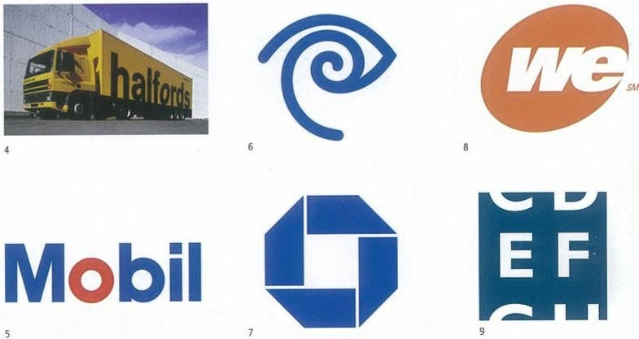
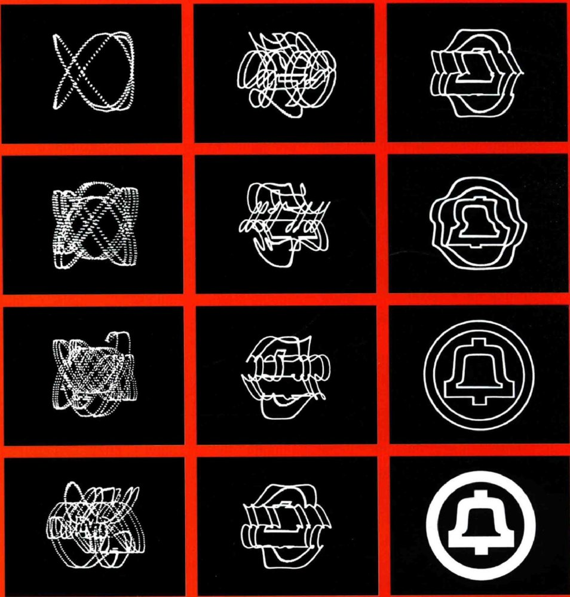
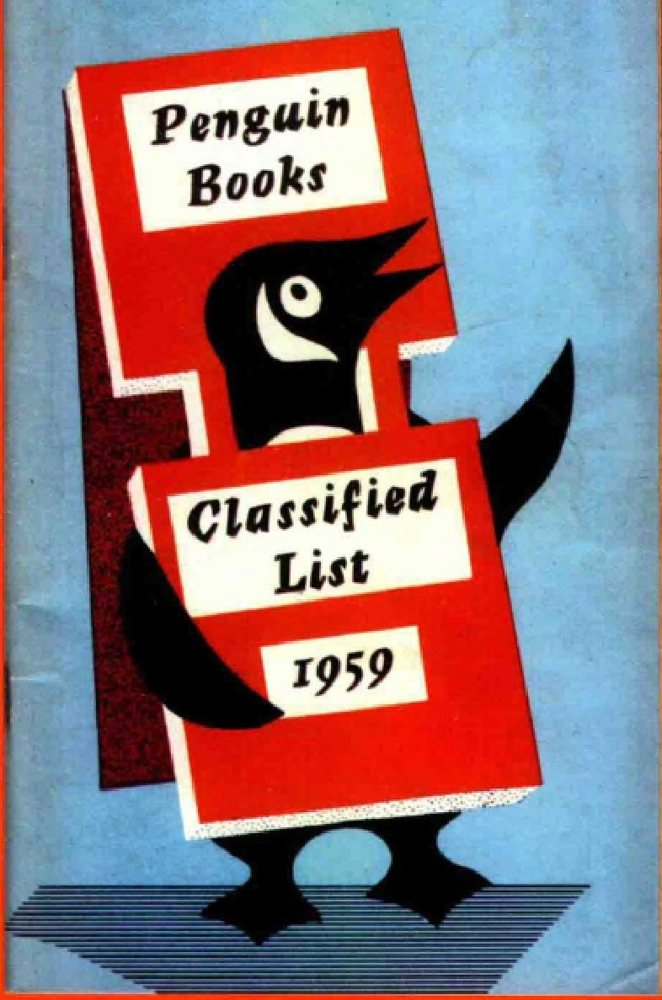
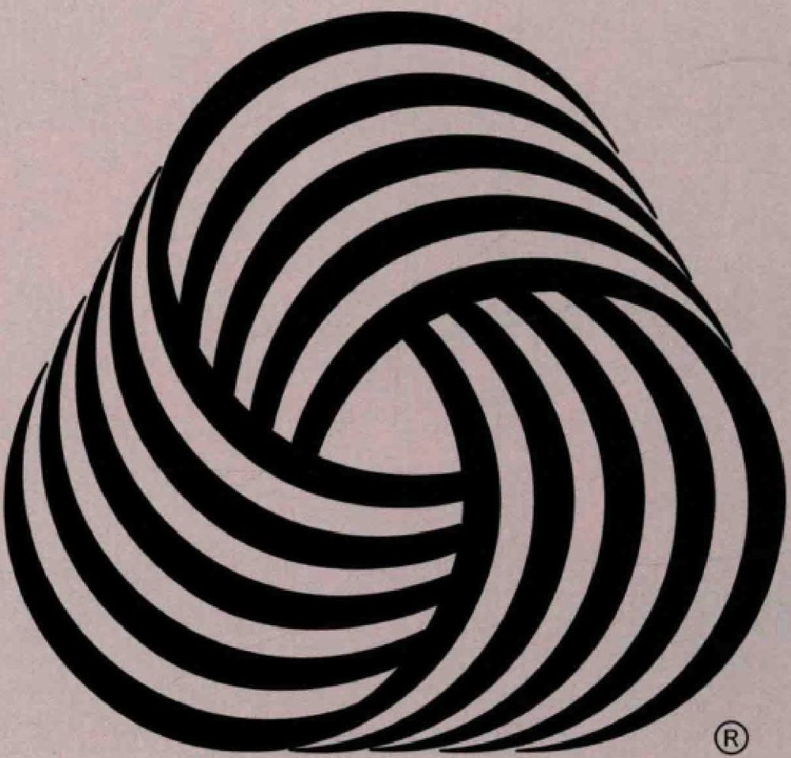
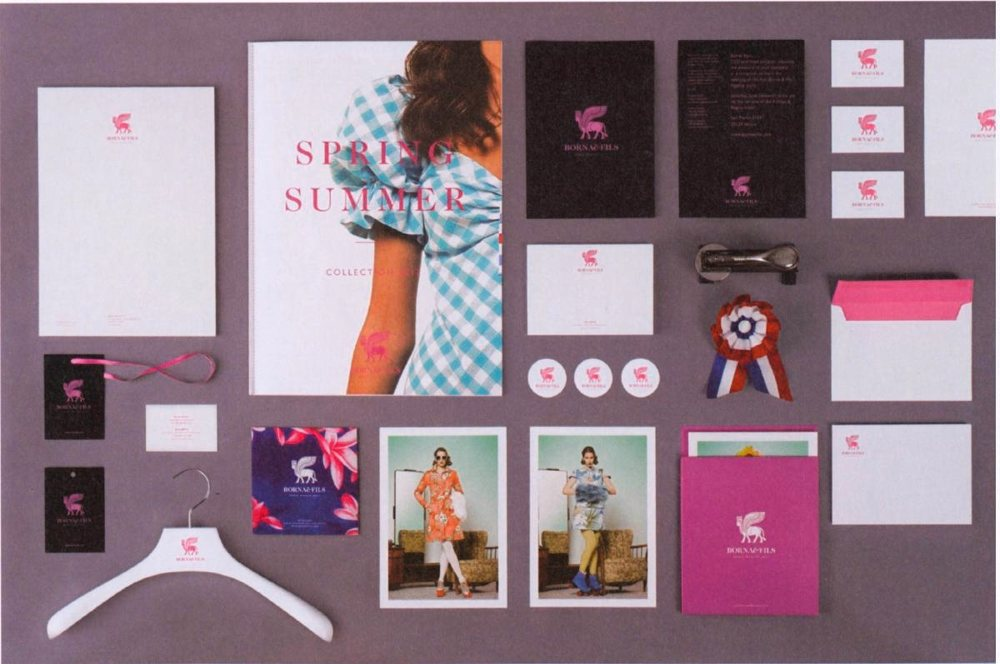
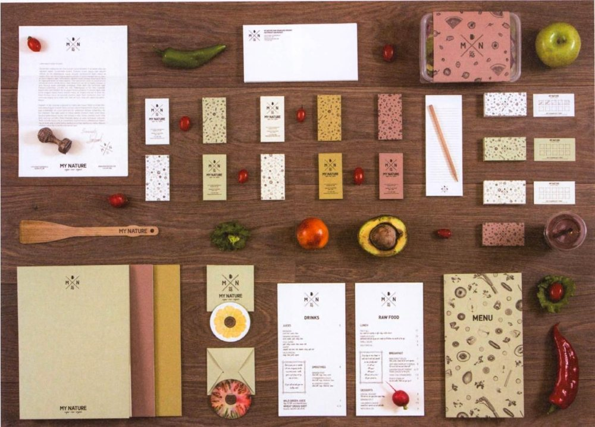
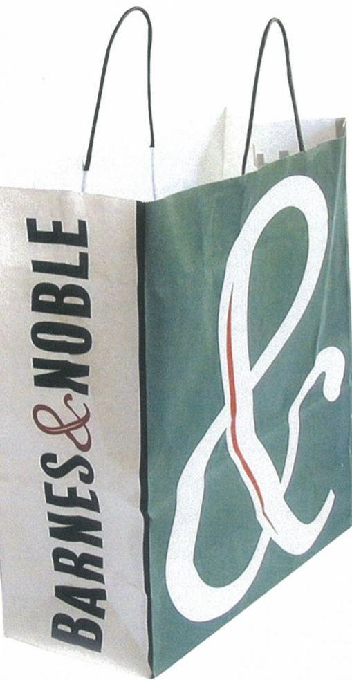
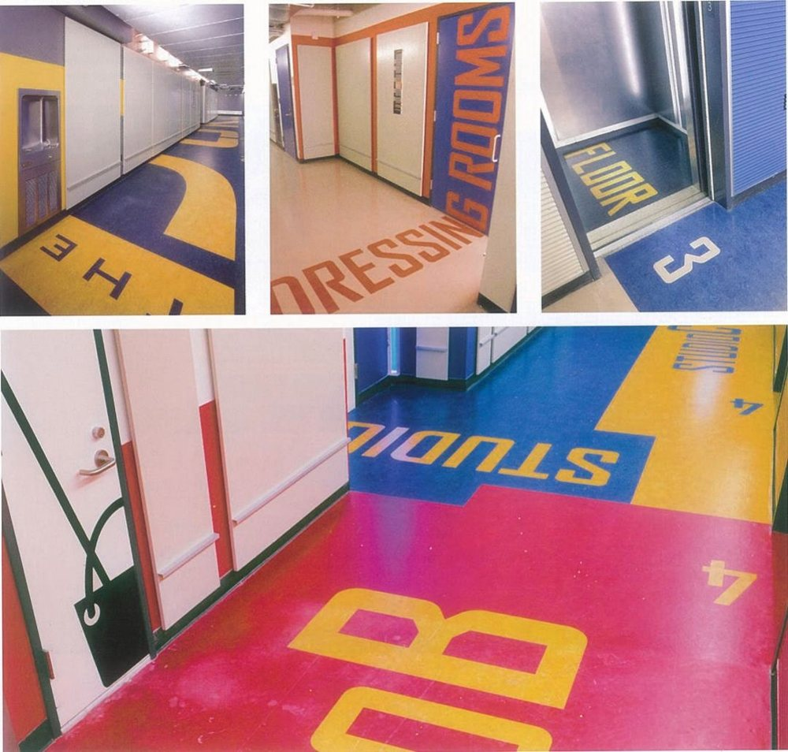
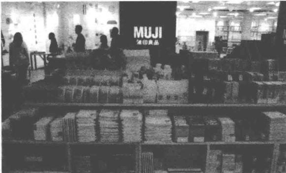
5. Source Bookshelf
Suggested reading order: 《What Brand 什麼是品牌設計》 → 《標誌設計指南》 → Wheeler, Designing Brand Identity (reference) → 《Logo 29 個經典》 (cases) → 《精簡：無印良品》 → No Logo (critique).
Show 41 titles
- LOGO 百年 - [010]設計品牌（原田進） - [017]用設計做品牌 - [022]品牌設計+：給你靈感的 Best 品牌形象方案 - [023]品牌設計+：創造 Top 品牌的色彩應用方案 - [024]品牌設計+：創造 Brand 力的動態 Logo 設計（1） - [027]標誌設計 Logo Design - [036]標誌新語 III - [037]Really Good Logos Explained - [051]Designing Brand Identity - [064]超越 LOGO 設計 - [069]Brand 創新與設計：創意、建構和維護精彩品牌標識之完全指南 - [076]標誌設計指南 Logo Design Workbook - [089]品牌標誌：TOP 設計 150 例 - [100]消費森林 × 品牌再生：李永銓的設計七大法則 - [108]品牌中的色彩 - [112]圖案無限：品牌中的圖案 - [151]品牌簡單之道 - [192]What Brand 什麼是品牌設計 - [195]品牌 100 - [198]一個 Logo 的誕生 - [199]視覺美食：最佳餐飲品牌設計 - [202]溝通時尚品牌 - [208]100 個經典 Logo - [209]品牌設計之美：冷色調的色彩詮釋 - [218]Logo：29 個經典的前世今生 - [234]Logo 百年 - [238]品牌至上：LOGO 設計法則與案例應用解析 - [239]品牌識別法則：100 條原理 - [240]NO LOGO：顛覆品牌全球統治 - [241]脫穎而出的品牌致勝秘密 - [245]精簡：無印良品與品牌理念打造 - [337]電商品牌形象設計 - 品牌標誌：頂級設計 150 例 - 設計品牌 - 世界標誌大典 1 - 品牌設計法則（徐適） - 日本彩色商標與企業識別 10 - 解構 Logo 設計：300 例國際 Logo 分析與解讀 - 超越 LOGO 設計：國際頂級平面設計師的成功法則 - 超越 LOGO 設計：國際頂級平面設計師的成功法則6. Study Cues
- Use the three words logo, identity and brand to describe a brand you know well.
- Draw 30 logo sketches for a neighbourhood café, choose 3, and write down why you chose them.
- Shrink a logo to 16 × 16 px and enlarge it to poster size, then check which details need adjusting.
- Make a competitor visual map: use "traditional–innovative" and "approachable–authoritative" as the two axes, and place logos from the same industry on it.
- Why does Muji have such a strong brand identity even though it hardly emphasises its logo?
- Design one page of brand guidelines: clear space, minimum size, three incorrect uses and a full set of colour values.
7. Each Book
Each book in the bookshelf is described below. Every title above links to its section.
LOGO 百年
Scope. This is a logo catalogue, not a how-to manual or a brand strategy book. Although the title says "a century", the main text is contemporary cases arranged by style: the first half discusses why ornament is still useful, and the second half turns to modernism's "less". Another scan of the same book appears later under the same title; use this one for the ornament and case study pages.
Main ideas
- Ornament can convey what the name alone cannot. The book uses the early Apple logo, which still spelled out Computer Co., as an example, and contrasts it with a pure tick that, on first sight, does not necessarily tell you it sells sportswear.
- Balance is harder than piling things up: not every line needs a meaning, but the elements must lock together. With too many colours and details, a logo can be beautiful yet unusable.
- Custom lettering is also a kind of ornament. The book cites Coca-Cola, the New York Mexican restaurant Brooklyn Taco Co. and Metallica's wordmark to show that decorative lettering can work.
- Cases are written up by design studio. The Brazilian bar BAR SAGRADO uses an illustration of "praying hands" together with a separate plain wordmark, matching tradition and adventure, and then carries them onto menus, booklets and takeaway bags.
- The modernist group looks at things the other way: less, functional, still recognisable from a distance. Both attitudes are in the same book; do not copy only half of it.
Methods
- When looking at a case, split it into three columns: what the symbol says, what the wordmark says, and which real objects it is used on.
- Ask whether the ornament is conveying information or just filling space. If it is filling space, delete it.
- Keep one piece each from the ornament chapter and the modernist chapter, and write down what each one sacrificed.
- If a page does not make the brand name clear, do not make up a story for it.
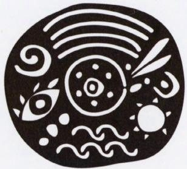
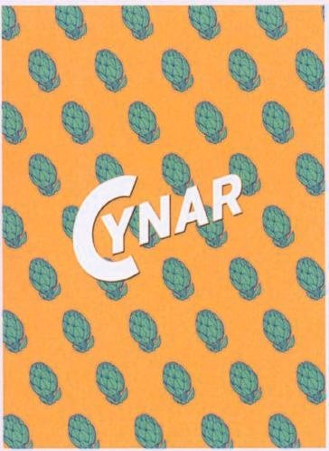
Study cues
- Write two sentences, one for "ornament is useful" and one for "less is harder"; give a logo from your own surroundings for each.
- Choose a logo you are working on, list three ornamental elements, and note which one really conveys information.
設計品牌（原田進）
Author: Susumu Harada
Scope. This is a practical book on brand strategy and the identity process, not a logo catalogue. Harada frames corporate identity as "designing the brand": first deal with how the company is known, then deal with the shape and colour of the logo. Another scan of the same book appears later as "Designing Brands"; this one has the most complete table of contents and is the best for following the process.
Main ideas
- A brand-name company is not necessarily big and famous. The book's standard is: the people who should know it really understand it, its products and services can be trusted, and its staff are proud of their work.
- In an environment full of information, simply working hard on good products does not mean outsiders will see them. A corporate brand is an impression in which substance and image overlap.
- Behind a product brand is a corporate brand. The book uses a handbag brand as an example: its quality can be maintained because there is a system of corporate activity and philosophy behind it, not just the object itself.
- Gaps in image cause problems. People rely on image information to make judgements, and the logo is a tool for conveying a visual image, so the book also discusses how a brand should respond in a crisis.
- The process is long: self-study, vision, philosophy, naming, the designer's role, preparation, concept, presentation, refining form and colour, and only then roll-out.
Methods
- First write "how others see this company now", then "how we want to be seen". If the two sentences do not match, you are not yet ready to draw a logo.
- Check the name in advance: etymology, negative meanings, trademarks. The book's flowchart puts this check after the concepts have been screened.
- Diverge first, then converge on concepts; refining form and colour is a later step, not the first.
- During roll-out, bring real communication materials (labels, internal information) back to check whether they have drifted from the decisions.
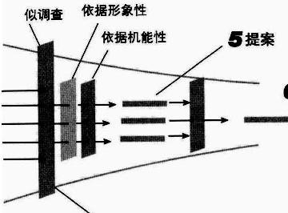
Study cues
- Using Harada's standard, write three sentences judging whether a small shop you know counts as a "brand-name company".
- For a fictional studio, list three naming checks: etymology, negative meanings, and who it looks too much like.
用設計做品牌
Scope. This is a classroom-style textbook that links name, logo and product through definitions and short cases. It is not a designer's process journal, nor a portfolio just for flipping through pictures. It is good for first separating a few easily confused terms.
Main ideas
- The book starts from "no design, no brand": a brand is described as a mark burned into the mind, and design is placed before brand-building.
- The name gets its own chapter. Short cases include the misspelled Google, Sony's naming and Acer's change of name, showing that a name can change and can deliberately not look like an ordinary word.
- Logo, corporate logo, trademark and brand mark are defined separately. Logos have several kinds of construction, and only then does the book discuss design.
- Usage rules are treated as part of the design. The case of UPS in the United States spells out the aspect ratio, the clear space around it, and the uses that are forbidden.
- The product is what really "rules" later on: the relationship between product and brand, product design, and the life cycle. A logo cannot replace the product.
Methods
- For assignments, put name, logo and product on three separate sheets. Do not try to solve all three in one sketch.
- When reading the UPS section, copy it out as a list of prohibitions: proportions, clear space, variants that must not appear.
- Use the evolution of famous logos (the book includes Apple and Coca-Cola's Chinese logo) only to observe "what changed", not to redraw them as your own assignment.
- For every visual decision, write one sentence on the product fact it corresponds to.
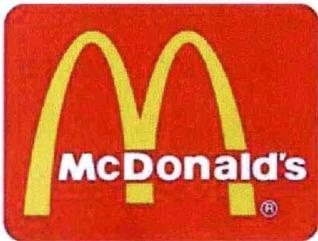
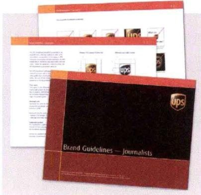
Study cues
- In your own words, tell apart "logo, trademark and brand". Write one sentence for each; do not copy the original definitions.
- Write three usage rules for your logo: minimum size, clear space, and one kind of alteration that is not allowed.
品牌設計+：給你靈感的 Best 品牌形象方案
Scope. This is a catalogue of brand identity cases, meant to broaden your view. A short preface explains what a brand is, followed by finished work in lifestyle, food, fashion, culture and exhibitions. Do not treat it as a step-by-step manual.
Main ideas
- The preface pushes the idea of a brand beyond the legal trademark: customers' positive feelings, loyalty and added value. A red-hot iron leaving a mark on livestock is used to explain the original meaning of the word.
- The logo is described as the visual embodiment of the company. The studio and client must first share vision, mission, strategy and values; only then does the design have a basis.
- Fashion is singled out: it moves fast, and designers must turn emotional value into visual concepts and be able to switch materials and printing.
- The cases are finished identity schemes, not sketch processes. The pages on a Hong Kong-style dessert shop talk about gathering, chatting and warmth; the images serve that place.
- Pages on big brands (Converse, for example) discuss how to hand a sense of history to customers, not how to redraw the logo.
Methods
- For each case, note only three lines: who it is for, the one idea that repeats, and which objects it is used on.
- Keep "structures you can borrow" separate from "surfaces you should not borrow".
- Use the preface's definitions to check whether your own brief states the vision clearly, not to memorise them.
- Do not make up stories for pages where the text breaks off.
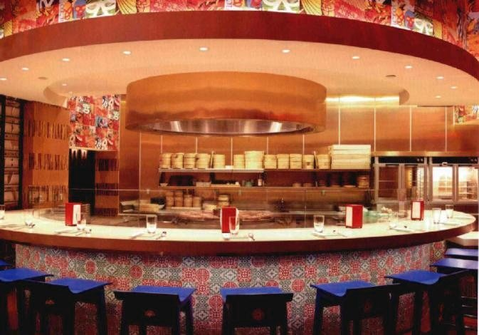
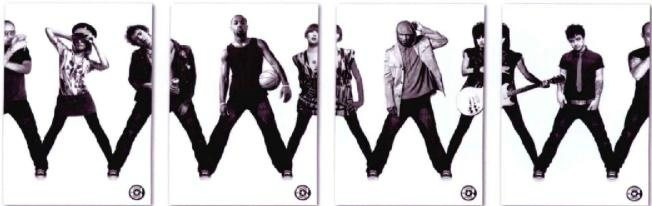
Study cues
- Choose a case and write one sentence each for "vision, mission and values". If you cannot, it means the page does not provide them.
- In your next assignment, which part is a structure you can borrow, and which part is just the surface of someone else's illustration?
品牌設計+：創造 Top 品牌的色彩應用方案
Scope. This is a colour catalogue arranged by case, not a colour theory textbook. Each entry usually lists the designer, the client and the colour values (CMYK, Pantone, RGB). It shows how colour enters signage, packaging and space; it does not teach you to draw a logo from scratch.
Main ideas
- Colour is treated as the main material of brand image. A long illustration in a hotel lobby, the red lettering of an engineering firm, the quotation marks in a theatre logo: all of them are "colour plus form" working together.
- The same red can do different jobs: the engineering firm uses a deep red with a sans serif to say "focused"; the theatre uses red and black, and its quotation marks are explained as stage masks.
- The food cases tie colour to objects. One chocolate identity covers the visual system, signage and packaging (jam, cake, sweets) at once, so that a traditional visual language and the cooking process are seen together.
- The book includes exercises that were completed but never actually launched (one changed the colour scheme and name for an imaginary character). When flipping through, tell them apart: this is a proposal, not necessarily a brand on the market.
- The colour values are printed beside each case so you can check proofs, not so you can collect a pile of attractive colour codes.
Methods
- Before copying colour codes, write down whether the palette is for print, screen or space.
- For each entry, write one sentence on the job the colour does: warning, food, machinery, performance.
- Find two cases that both use red, and write down why their reds cannot be swapped.
- If a page has only colour blocks and no readable explanation, label it as an illustration from the book; do not attach a brand story to it.
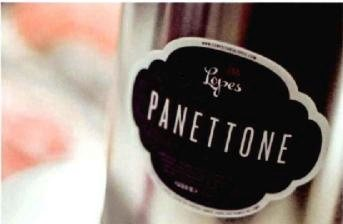
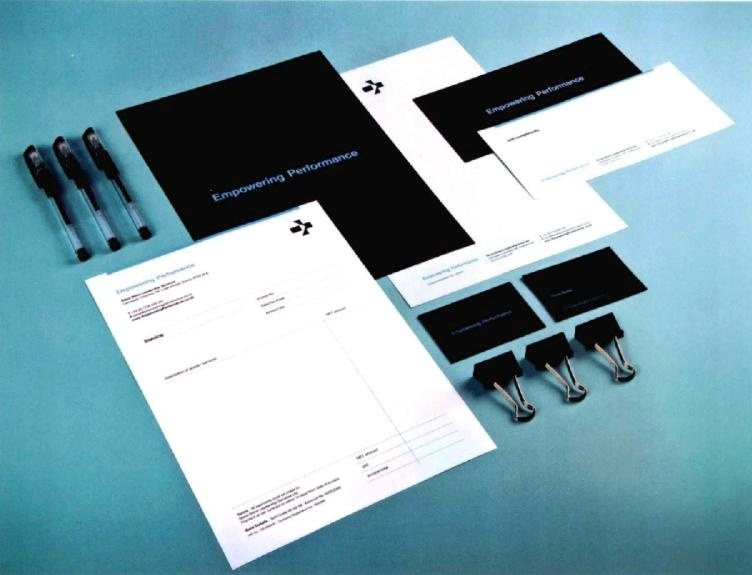
Study cues
- Choose a brand colour you often use, write one set of values for print and one for screen, and say where you checked them.
- For the same red, write two uses that cannot be swapped (for example food and warning), with one reason each.
品牌設計+：創造 Brand 力的動態 Logo 設計（1）
Scope. This is a catalogue of dynamic logo cases. "Dynamic" here mainly means an identity system that can change, not an animation software tutorial. Each entry gives the client, the design firm and the country, which makes it good for seeing "what stays fixed and what changes".
Main ideas
- Change needs rules. The communications agency Choco puts dots and letters into a relational matrix; their positions shift, while a rounded sans serif softens the rigidity of the matrix.
- Lovesac's slogan is that furniture changes with your life. The wordmark hides inside different graphics and changes with seasonal campaigns. The humour must stay; it is not a matter of swapping in an unrelated picture each time.
- BEM uses the letter b as its core. The style can change to suit different backgrounds and ages, but the brand cannot rely on just one fixed logo.
- Kid-O turns the open-endedness of building blocks and puzzles into illustrations: blocks can be a tower, a puzzle can be a flower. The printing goes for simplicity and honest materials.
- The clothing brand NAAATAA needed a believable image for one-off garments, so it used different sides of the same idea, rather than a new logo for each garment.
Methods
- First write one rule: "What never changes is ____; what can change is ____." If you cannot write the rule, you do not yet have a dynamic identity.
- Shrink the variants right down and see whether they still look like one family.
- Only make variants where things really change (seasons, sub-brands, backgrounds); do not make a set just because it looks good.
- When reading the cases, note the country and type of client, so you do not see all dynamic logos as the same fashion.
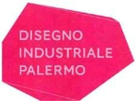
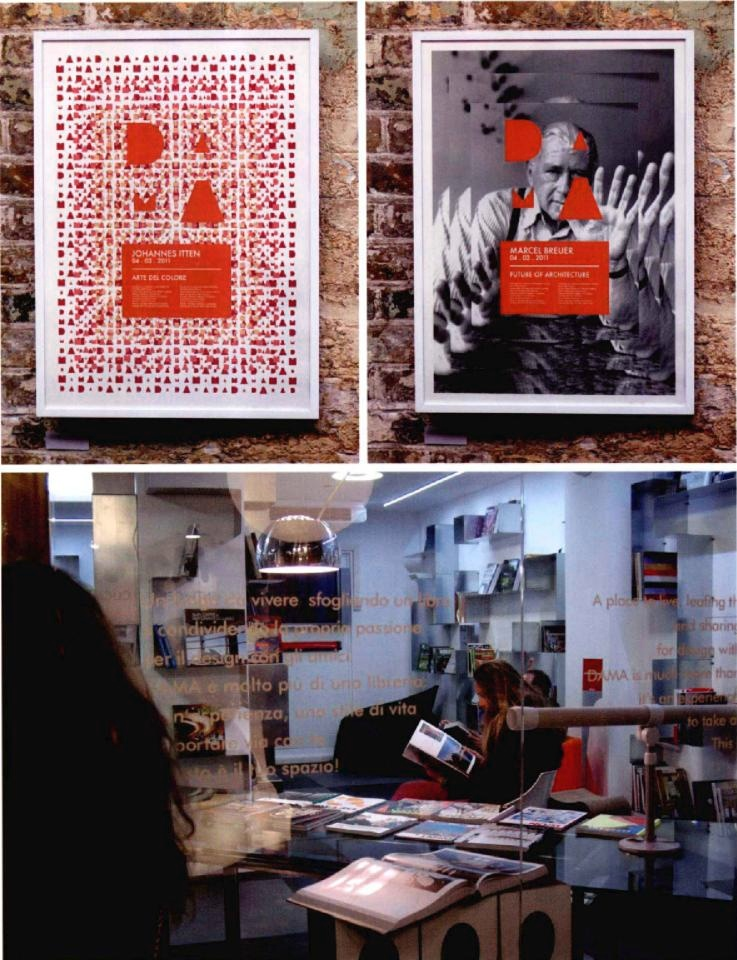
Study cues
- Write one dynamic rule for a student society: what never changes, and what can change with each event.
- Draw three variants. If the text is covered, can your classmates still tell they are the same logo?
標誌設計 Logo Design
Scope. This is a logo design textbook, moving from definitions and classification to graphic variation and identity systems. It teaches the components of logo design as a subject, not corporate strategy, and it is not a yearbook of work.
Main ideas
- Several near-synonyms are firmly separated: a logo is always a kind of mark; a mark is not necessarily a logo; a symbol stresses what it stands for; a sign only gives directions, and the book says it is not a logo; a brand is bigger than a logo, and the logo is the visual core of the brand.
- The working definition the book gives is: a graphic symbol that represents a particular thing and carries symbolic meaning.
- A logo must be graphic and conceptual. If lettering has no character of its own, it does not yet count as logo design.
- Variation is a basic exercise: adding a piece to a complete shape, taking a piece away, or changing the size of one part all produce another shape that is still related.
- An identity system first has a main image that represents what all parts share, then adds supporting graphics that carry the character of each sub-unit, instead of every department making its own unrelated logo.
Methods
- Before you start drawing, say whether you are making a logo, a directional sign, or a larger brand. Do not mix the three words in one sentence.
- Make one "added" version and one "subtracted" version of the same basic shape, and compare which is easier to remember.
- Set the main logo first, then make a sub-logo; the sub-logo must be recognisable on its own as belonging to the same organisation.
- Ask someone who has not seen the brief to say who it represents. If they cannot, your definition has not yet landed.
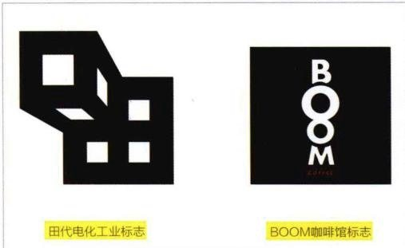
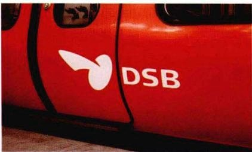
Study cues
- Find one example each to explain why a mark, a sign and a brand are not all the same as a logo.
- Make one added version and one subtracted version of your logo. Which one still lets you recognise the original shape?
標誌新語 III
Scope. This is a catalogue of contemporary Japanese logos, with one or several small logos per page and the designer and client listed. It has no strategy chapter and no drawing steps. Much of the text in this scan is corrupted, so you can only look at the forms and cannot rely on the captions.
Main ideas
- Names visible in the contents include a Shibuya design venue, Sumida Aquarium, and wordmarks and symbols for many small clients. The point is what Japanese logos looked like at the time.
- The layout is a display of work: designer, client, number. There is no "challenge / process / result" narrative.
- The same designer often appears with several pieces in a row, which makes it good for comparing one person's forms, not one industry's brand strategy.
- Where the text could not be recognised, the page is just pictures. Do not guess broken words into a brand story.
- Use it to train your eye: how wordmarks, pictorial marks and lettermarks are told apart in a very small area.
Methods
- Choose only three logos at a time and classify them as wordmark, pictorial mark or lettermark.
- Copy down the designer and client only if the credit line is readable; if not, leave it blank.
- Compare two pieces by the same designer: do they share the character of the line, or just differ in subject?
- Do not use this book for process notes.
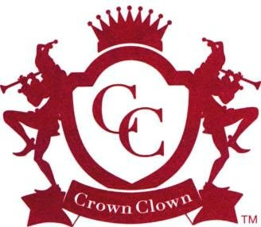
Study cues
- From this kind of catalogue, which fields can you legitimately copy into your notes? List three.
- Choose three logos you can see clearly and describe each form in one word (for example thick, sharp, round). Do not write a brand story you have guessed.
Really Good Logos Explained
Scope. This is an illustrated book that "explains why logos are good", with chapters organised by character. It is not a manual that takes you from brief to final artwork. It also has a chapter on logos that are not good enough. It is good for learning how to talk about a form, but not as your only production process.
Main ideas
- The chapters are arranged by look and feel: Loud & Proud, Sleek & Subtle, Shelf-Savvy, Smart & Effective, followed by the authors' own favourites.
- Explanation matters more than style. In the sample, three favourites are liked for different reasons: a wooden bird that has broken its string and flown away suits a life coach's message; a logo for a water exhibition is restrained, with the letters flowing together with the ink; the bold, decorated black letters for a charity bike ride look as if they were fun to make.
- "Not good enough" gets its own chapter for comparison, not just for mockery.
- The book assumes its readers include designers, clients and critics, so its approach is to explain decisions clearly.
- It does not provide strategic steps such as naming, trademark checks or brand guidelines. Look for those in identity manuals, not in this book.
Methods
- For each logo, write down only the one reason the book gives, in one sentence.
- Put three of your own sketches into these four characters, and see whether you can really only do one of them.
- Use the "not good enough" chapter to list three failures: blurry at a distance, looks like another industry, ornament drowns the name.
- Label index pages and pages with broken text as illustrations from the book; do not make up stories for the names on them.
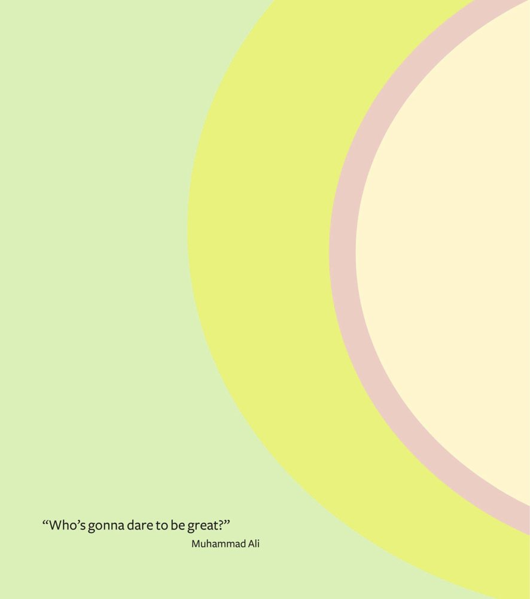
Study cues
- For each of the four words Loud, Sleek, Shelf-Savvy and Smart, find a logo you have seen and give one reason.
- Choose one of your own logos and write two reasons it might fall into "not good enough".
Designing Brand Identity
Author: Alina Wheeler
Scope. This is the original English edition of the brand identity reference book, written for the whole brand team, not a book of logo pictures. Almost all that survives of the main text in this scan is the acknowledgements and the title pages; the readable sentences are the subtitle and a quotation from Chanel. For the five phases and the list of ideals, rely on the Chinese editions of the same book (see "Brand Innovation and Design" and "Standing Out: The Secrets of Winning Brands").
Main ideas
- The subtitle says it plainly: this is an essential guide for the whole branding team. The people who draw the logo, manage the strategy and make the applications must use the same language.
- The sentence on the title page is: in order to be irreplaceable, one must always be different. The job of identity is difference, not drawing a logo that looks like everyone else's in the industry.
- A logo is not a brand. A brand is the impression in people's minds; identity is the sensory system that can be designed.
- A strong identity must handle vision, meaning, authenticity, differentiation, durability, coherence, flexibility and commitment all at once, and in the end be able to state its value. The Chinese edition sets out these ideals one by one.
- The work order is research, strategy, design, touchpoints, asset management. The details cannot be read in this English scan; do not pretend the acknowledgements page is a case study.
Methods
- Use this book first to confirm you have the right kind of book: a team manual, not a catalogue. For details, read the phase contents of the Chinese edition.
- When presenting, first explain "who we are different from", then show the logo.
- If only the designer on the team can use these terms, the identity has not yet been shared.
- Do not copy the acknowledgements list into your notes.
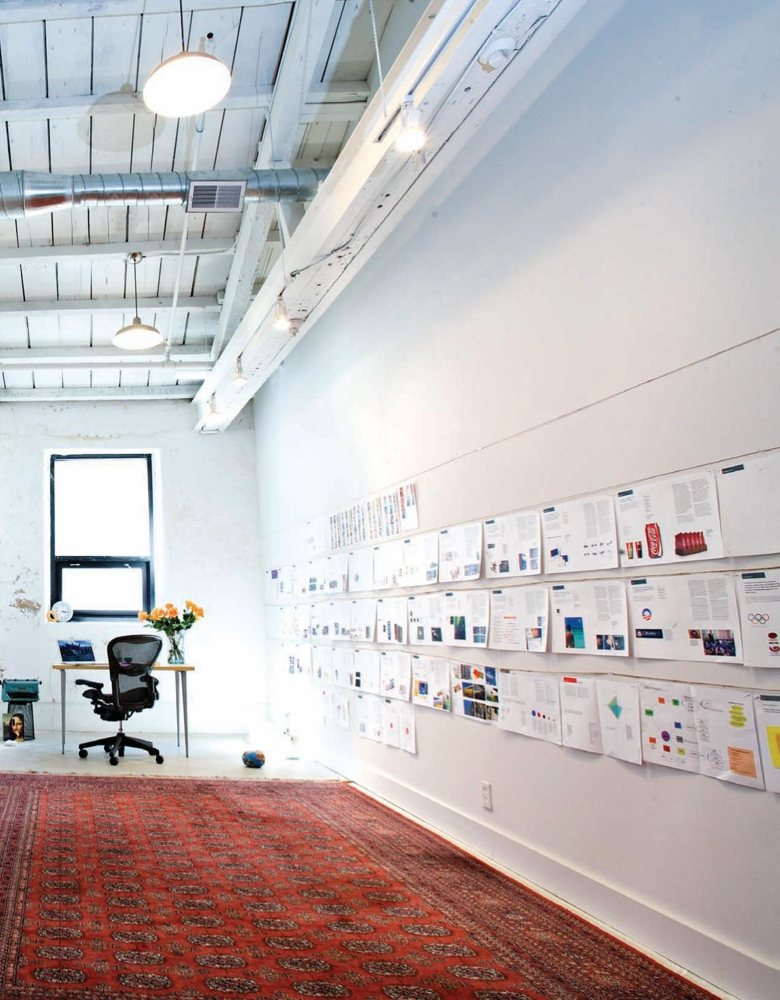
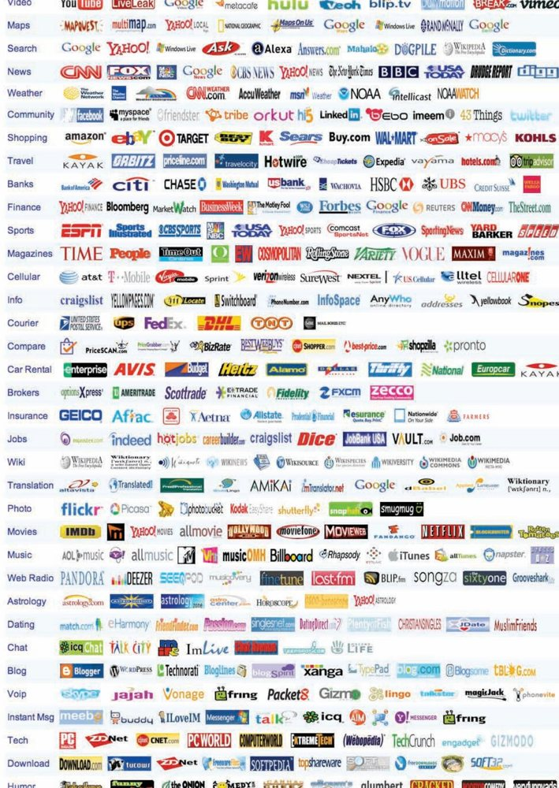
Study cues
- In one sentence, distinguish brand from brand identity, and say who this book is written for.
- In your group, who handles research, who handles strategy, and who handles touchpoints? If you cannot write names, the division of work does not exist yet.
超越 LOGO 設計
Original title: Logo Design Love: A Guide to Creating Iconic Brand Identities
Author: David Airey
Scope. This is a how-to book on logo design: from everyday observation and client stories to design elements and twenty-five practical tips. It is not a critique of branding, nor a yearbook of cases. There are two other scans of the same book, with text and images of varying completeness; this one has the clearest version of the early-morning logo count and the contents list of tips.
Main ideas
- There are so many logos that they look alike. The book counts the logos the author meets in one morning, starting with the alarm clock, to show that being different is itself a design opportunity.
- People often choose by emotion rather than by specification. The book contrasts Aston Martin with Skoda: the rationally fuel-efficient car is not the one people are willing to pay more for.
- Negative space is treated as a serious technique. The logo for a food writers' association forms the outline of a spoon inside a pen nib; what is left out matters as much as what is drawn.
- The tips are firm: a logo does not need to show what the company does; not every logo needs a symbol; aim for one thing to remember; sketch first; leave trends to fashion; work in black and white first; be legible, consistent, and have a one-colour version; test at several sizes, including reversed out and upside down.
- The last two tips draw a hard boundary: a logo is not a brand; and it is a two-way process, not the designer handing over artwork alone.
Methods
- Look around you now, count the logos you see, and note which ones you can barely tell apart.
- Draw on paper before opening the software. Add colour only after the black-and-white version works.
- Run four tests on every option: small, reversed out, one colour, upside down.
- When presenting, say which of the client's problems it answers, not just whether the form looks good.
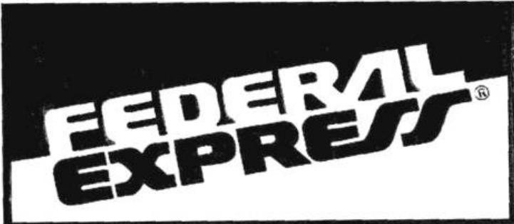
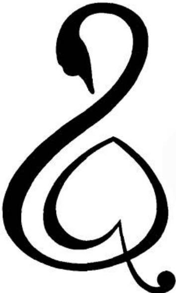
Study cues
- Choose three of the twenty-five tips and check one of your recent logos against them. For each, write one sentence saying pass or fail.
- Without software, draw twelve small sketches for a "community repair station", then pick one for a black-and-white test.
Brand 創新與設計：創意、建構和維護精彩品牌標識之完全指南
Original title: Designing Brand Identity: A Complete Guide to Creating, Building, and Maintaining Strong Brands
Author: Alina Wheeler
Scope. This is the Chinese edition of Designing Brand Identity, a strategy manual for brand identity. Part one clarifies brand and identity, part two covers the five phases, and part three gives case studies. It is not a book on how to draw logos, although phase three does cover wordmarks, colour and typefaces.
Main ideas
- The opening questions are: who are you, who needs to know, how will they find out, and why should they care? Time and space are both shrinking, so an identity has to work fast.
- This edition lists nine ideals: vision, meaning, relevance, personality, durability, coherence, flexibility, management and value.
- The basic vocabulary includes strategy, positioning, experience, brand architecture, names and taglines, as well as wordmarks, lettermarks, pictorial marks, abstract marks and emblems.
- The five phases: research (business, market, competitors, stakeholders, language), clarifying strategy (focus, big idea, brief, naming), designing the identity, creating touchpoints, and managing brand assets.
- The list of applications is concrete: letterheads, business cards, brochures, packaging, websites, outdoor, advertising, environments, vehicles, uniforms. The case studies that follow are simply the results of these phases; the contents list names such as Amazon, Tate, Mini Cooper, FedEx and Unilever.
Methods
- Use the four opening questions to write the first page of your brief. If you cannot answer "why should they care", do not start drawing.
- Research outputs must be something you can show others: one page each on competitors, stakeholders and language.
- In the design phase, hand in the wordmark, colour, typefaces and one real application together; do not hand in just a logo.
- At the end of the project, make one page of asset rules: who can change things, where to download them, and how to measure whether they work.
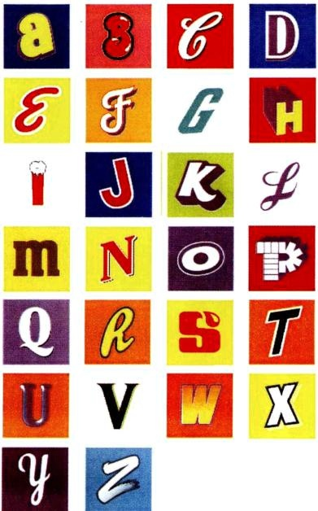
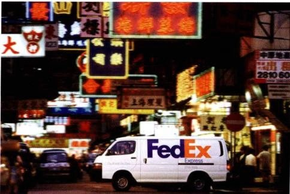
Study cues
- Turn each of the five phases into an output you could hand in this week (for example a competitor page, a name, a one-colour logo, a business card, usage rules).
- Score a brand you know well against the nine ideals. Which one scores lowest?
標誌設計指南 Logo Design Workbook
Original title: Logo Design Workbook: A Hands-On Guide to Creating Logos
Scope. This is a logo workbook: it first separates terms such as logo, mark, trademark, wordmark, symbol, monogram, identity and brand, then discusses the brief and objectives. It has pictures, but they explain the pros and cons of each type; it is not a catalogue.
Main ideas
- Logo making is traced back to a very old motive: people want to claim ownership. Signing a drawing as a child or carving letters into a tree becomes, in an organisation, a logo.
- The historical examples start with marks on bricks: the place of origin, the maker and the destination all needed to be recognised. Today's logos are still an extension of this.
- Each type has pros and cons. Wordmarks, symbols and monograms are not interchangeable; the book asks you to know first which one you are choosing.
- A logo is not a brand, unless it really takes on the brand's work. An identity must answer who, what and why.
- The brief has a set of questions and requires you to write down objectives and commitments. A logo is a component of company strategy, not a pretty decoration.
Methods
- Write the English name of the type in the corner of your sketch. If you cannot, you have not chosen yet.
- Answer who, what and why in three sentences before you start drawing.
- For the type you chose, write one strength and one weakness. If you cannot write a weakness, you have only looked at attractive examples.
- Judge the logo on the things it will really be printed on, not only on a white background.
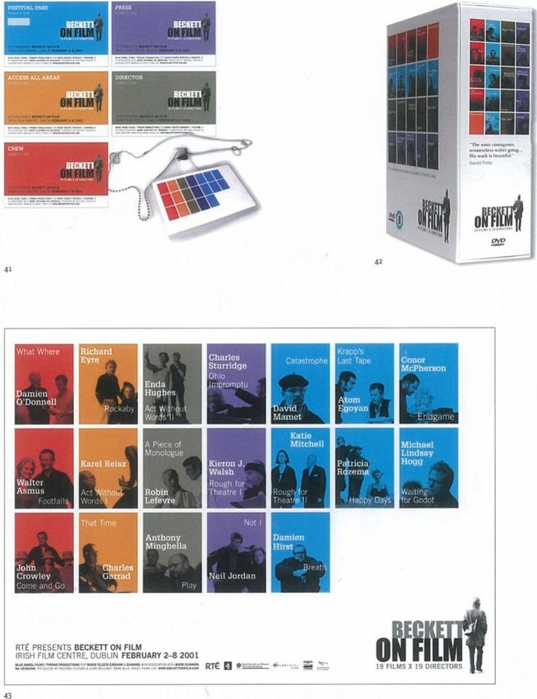
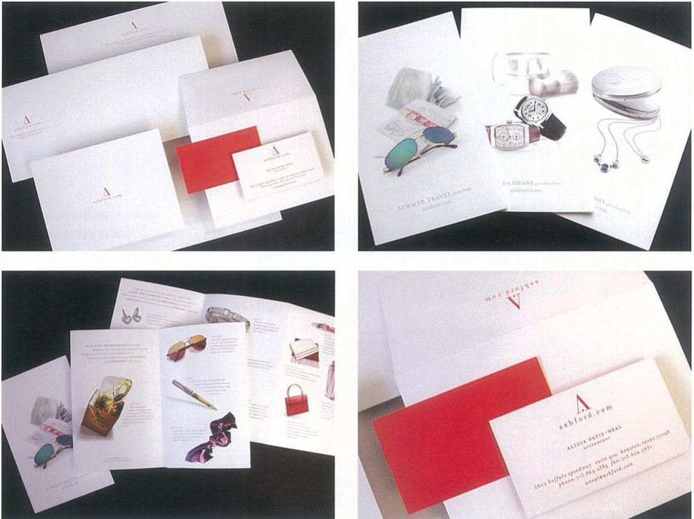
Study cues
- Without looking at your notes, write the difference between a wordmark, a monogram and a symbol, with one example of each that you have seen.
- Write who, what and why for your logo. Which sentence is weakest?
品牌標誌：TOP 設計 150 例
Original title: Creative Solutions: Logos: Making a Strong Mark: 150 Strategies for Logos That Last
Scope. This is a catalogue of 150 logo cases. Each one is written up as "challenge, process, result", and the opening uses the 6Ps of marketing to remind designers to see the problem from a promotional angle. It is not a book on logo drawing technique. Another scan of the same book appears as "Brand Logos: 150 Top-Class Designs".
Main ideas
- The 6Ps are product, place, price, packaging, promotion and people. The assessment can be a few minutes of intuition or a long investigation, but it should never be skipped entirely.
- The real difficulty is constraints: client demands, time, saturated markets, different audiences, new technology and unusual applications.
- The cases span many tones of voice. What they share is described as "making a strong brand", not a single style.
- A jazz league's logo puts a smooth brass instrument inside an oval, on the condition that it can be recognised from afar on a drum kit and also works on letterhead.
- Zephyr turns a streamlined Z into a coloured signal flag, linking the name of the west wind to a pleasure boat. The process describes how the form carries both myth and seafaring, not just the delivery of an attractive letter.
Methods
- After reading a case, rewrite it in three lines: what the constraints were, what form they led to, and where it finally appeared.
- Before you start drawing, ask one question for each of the 6Ps. If you cannot answer place and people, the logo can easily end up made for yourself.
- Write down the logo's "harshest size" (seen from afar on a stage, or in the corner of a letterhead) and pass that test first.
- Do not mix up the page numbers of this book with those of the other scan.
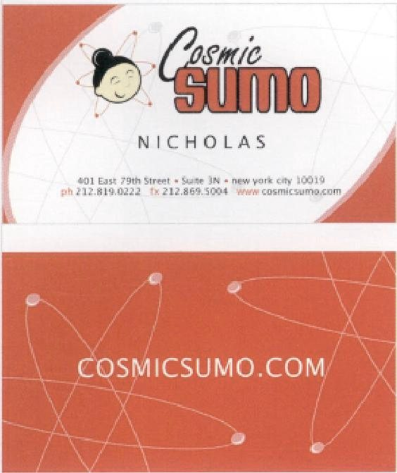
Study cues
- Write one word for each of the 6Ps for a shop you often visit. Which one affects the logo most, and why?
- Put your logo at two sizes: a sign seen from far away, and the corner of a business card. Which fails first?
消費森林 × 品牌再生：李永銓的設計七大法則
Author: Tommy Li
Scope. This is a book on brand strategy written by a designer. It uses Hong Kong projects to discuss how to bring a brand back to life. It is not a book of logo techniques, nor a catalogue of world-famous brands. Seven strategies are paired with complete cases that span several years, not a single pitch.
Main ideas
- The author shifted his work from design to branding, and hopes the brands he has worked on can live another twenty or fifty years. The logo is only the surface of this work.
- Personality is described as a market advantage that cannot be replaced. Without personality, promotion is just fighting others for the same spot.
- The pages on Honeymoon Dessert give a concrete decision: when the shop moved from Sai Kung into the city, it first made its name as "handmade desserts", and about two years later, once people knew it, it went back to "Honeymoon Dessert".
- The book places its cases in Hong Kong's timeline: the 1997 handover, the financial crisis, retail, SARS, and the move north to the mainland. The strategies are responses to these conditions.
- The team must be complementary: space, graphics and type are not the same person. The author also asks for broad interests, not skill in only one kind of image.
Methods
- Write the brand's personality in one sentence, and check whether a competitor could honestly use the same sentence.
- Record a project's decisions year by year, not just the final logo.
- List who on the team handles space, who handles type, and who talks to the client about the brand. Any empty position is a risk.
- Ask what kind of feeling the product sells. The book's line on desserts is: what you sell is a feeling.
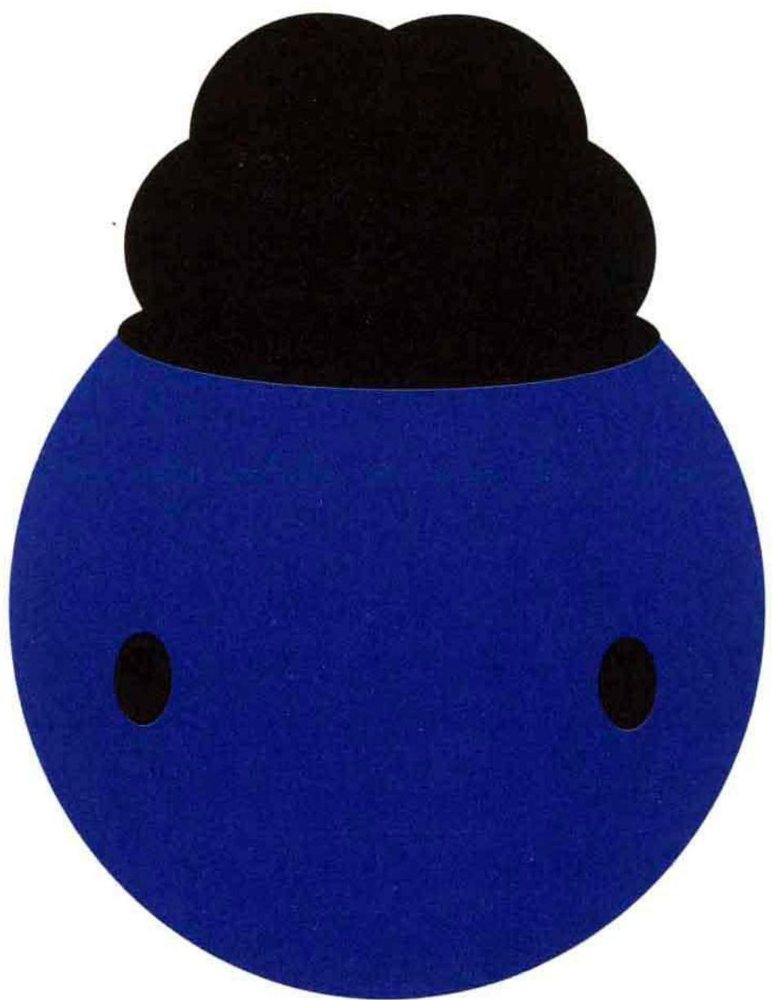
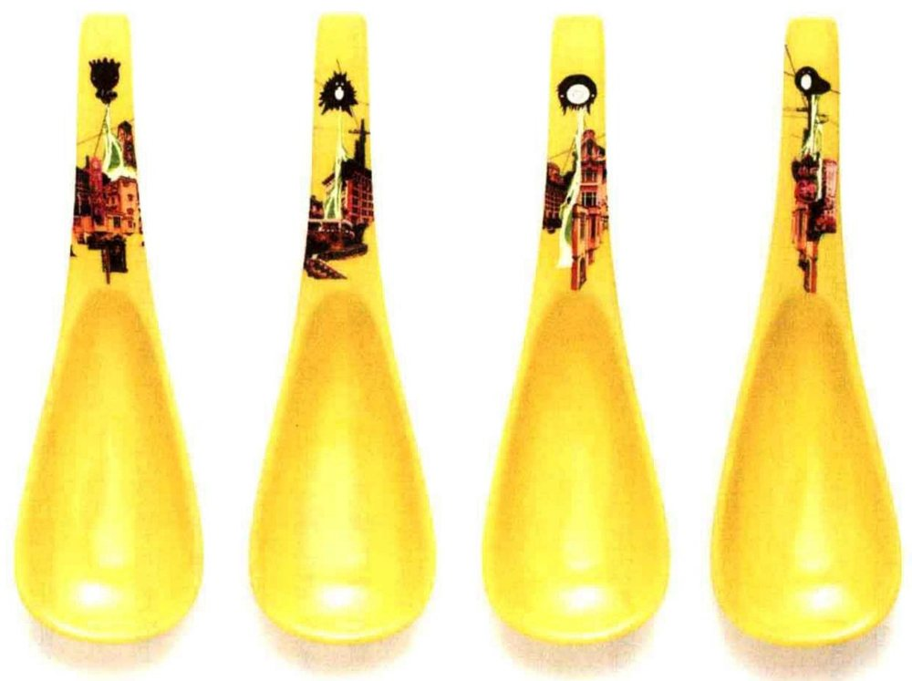
Study cues
- Write the personality of a Hong Kong brand in one sentence that a competitor could not copy.
- If you were creating a food and drink brand, what would your naming strategy be in the first year? Write down the few words you would make people remember first.
品牌中的色彩
Scope. This is a catalogue of brand colour organised by hue: red and pink, purple and blue, green, yellow, orange and brown, black and white, and multicolour. Each group has interviewees and many short cases. It is not a colour theory textbook, nor a guide to drawing logos.
Main ideas
- Colours are first sorted into families everyone can recognise, then the book looks at how individual brands use them within each family.
- Red with white is described as a very strong combination. The page lists Coca-Cola, Levi's, Canon, Citroën and others as users of this pairing. The point is the combination itself, not the founding stories of these companies.
- Interviewed designers explain why they do not add a third colour: once the decision is made, you do not have to reinvent the palette every time.
- The section on black and white stresses that they will never be replaced. An interviewee puts coffee and Chanel among "good things that are still black", to talk about lasting quality, not about how to draw a logo.
- The multicolour group covers multi-colour systems. It is useful for seeing when a brand needs a whole set of colours rather than just one main colour.
Methods
- First pick one hue chapter and note whether the industries in it are highly concentrated. Concentration means there is a convention.
- Write down whether you want to join this convention or break it. Either way, give one sentence of reasoning.
- Split the palette into main colour, secondary colours and neutrals. A palette with only a main colour is not yet a brand palette.
- In your notes, record the interviewees' reasons; just clipping colour swatches is no use.
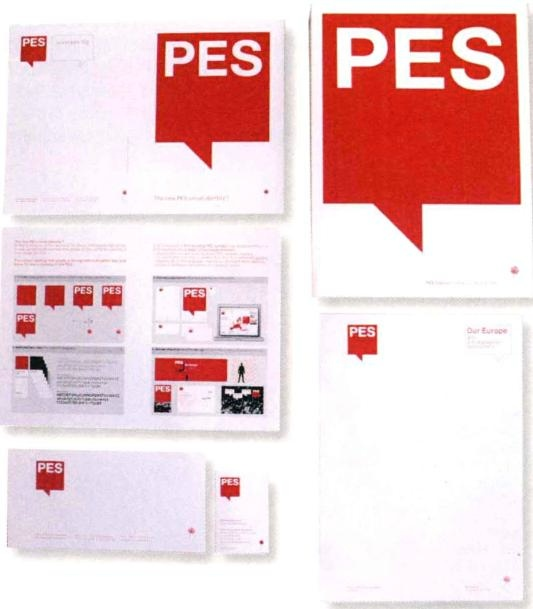
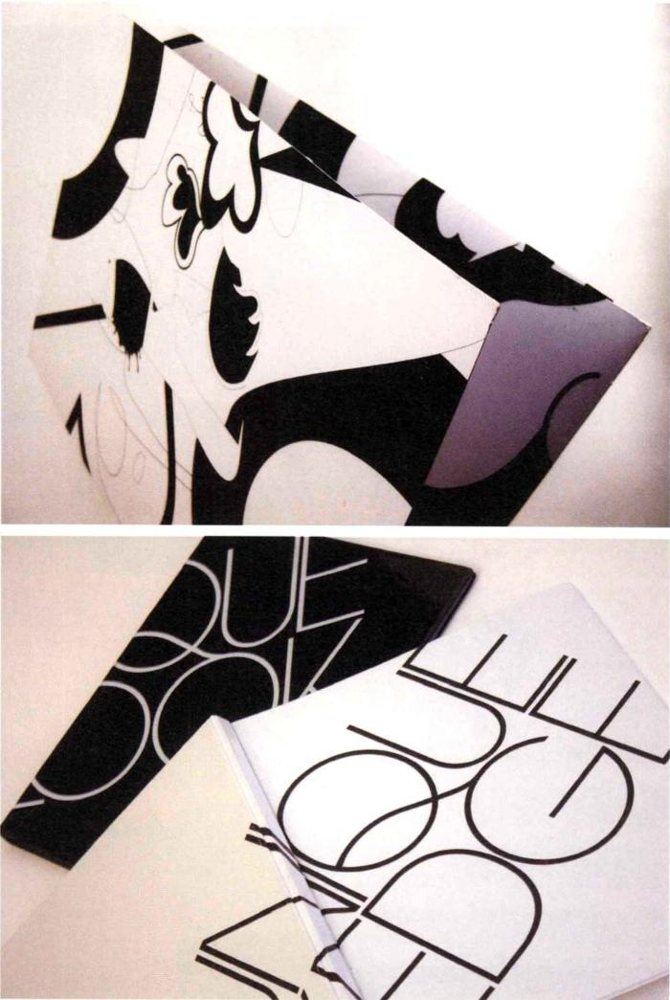
Study cues
- Choose an industry. Write down the colours you would expect to see, and one colour you would use if you broke the convention.
- Set one main colour, one secondary colour and one neutral for your assignment, and write one sentence on the job of each.
圖案無限：品牌中的圖案
Scope. This is a book of cases on "how patterns become brand assets". It opens with nature and repetition to show where patterns come from, then moves on to patterns in identities, packaging and spaces. It is not a book on how to draw a single logo.
Main ideas
- A pattern is seen as the repetition of a few simple shapes: placed side by side, rotated, offset and coloured. Stripes, scales and honeycombs from nature are used to open your eyes, not for you to copy living things.
- An identity can keep expanding through pattern. The logo is the starting point; shop windows, stationery, packaging and the website use the same repetition.
- Approaches in the book include geometric repetition, negative shapes, figures made from two parts, and arranging species or symbols into patterns.
- Polluted Records uses the pause and stop symbols from audio playback as its main image. The form is short and terse, which matches the industrial-sounding name.
- One page on a Belgian bakery says that the identity, website, stationery, shop window and packaging were all handled by the same team. The shop's name is not clear in this scan, so do not invent one.
Methods
- Draw the repeat unit first, then let it spread. If the unit cannot stand on its own, spreading it out is just noise.
- Write one sentence on the pattern's job: is it talking about ingredients, music, species, or just filling empty space?
- Keep a version of the logo that has no pattern and still works.
- At the edges of the packaging, check whether the pattern gets cropped into some other, unrelated shape.
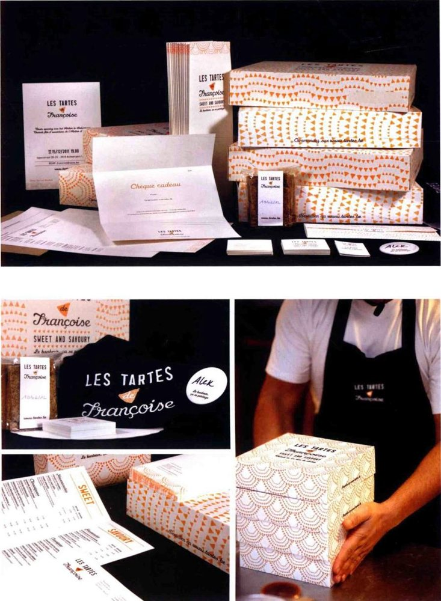
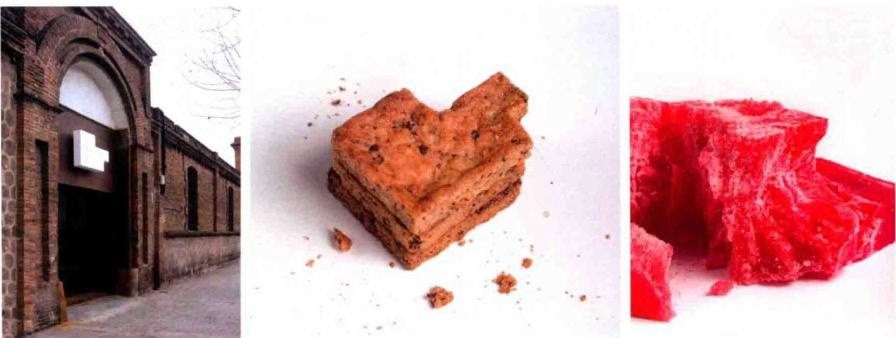
Study cues
- Draw a unit and repeat it six by six. Cover the middle: can you still recognise the same pattern at the edges?
- If you took your pattern away completely, what would be left of the logo? Write it in one sentence.
品牌簡單之道
Original title: BrandSimple: How the Best Brands Keep It Simple and Succeed
Scope. This is a brand strategy book about how a brand can be understood and carried out through a simple idea. The author's background is in packaged goods and brand consultancy; it is not a logo drawing tutorial. The cases illustrate simplicity and are not there to be copied.
Main ideas
- Influential brands are both different and relevant to people's needs, and these two things must also be said in a way that is easy to understand.
- When there is too much information, complicated messages get rejected. Simplicity is about being received, not about cutting out all the content.
- A brand is not the job of one person in the advertising department. Production, packaging, shipping, customer service and the website all have to carry out the same idea, so the idea must be simple enough for the organisation to remember.
- However many signals you send, the experience must still be one thing. The book uses the customer journey to show this: if the engineering and the instruction manual each say something different, even a good product falls apart.
- Everyday goods can become brands too. The kitchen utensil example asks: why not make tools that are both durable and easy to use, and suit most people?
Methods
- Boil the brand idea down to one sentence an outsider can understand. If colleagues retell it and it changes, it is not simple enough yet.
- Draw a customer journey, and at each touchpoint write down the signal the customer receives. Where signals contradict each other is where the next draft goes.
- Separate "different from others" from "relevant to needs". If you only have the first, it is not yet a brand in this book's sense.
- From each case, take only its one simple idea, not its visuals.
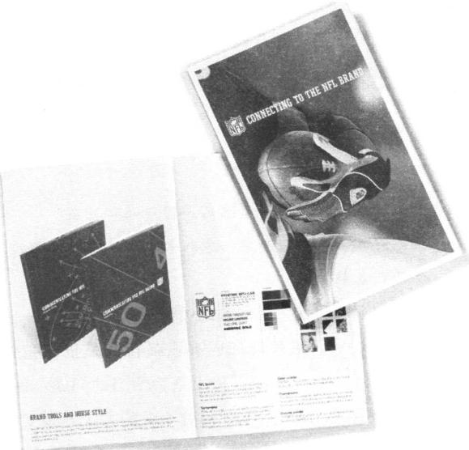
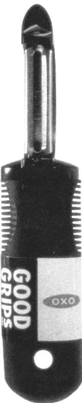
Study cues
- Explain a brand you like in one sentence. If it takes a second sentence to understand, write down what the second sentence is adding.
- Draw five touchpoints for a canteen (entrance, menu, tableware, packaging, social media) and check whether they are saying the same thing.
What Brand 什麼是品牌設計
Original title: What Is Branding?
Scope. This is an introductory strategy book on brand design: whose head the brand lives in, what a brand does, who owns it, and how it develops. There are analyses of work at the back, but those are appendices, not the main body.
Main ideas
- A brand lives mainly in the consumer's head and is close to a reputation. The brand manager's job is to keep this impression positive. Brand design only has work to do when the product is better than people think it is.
- The same symbol can belong to completely different brands. The book uses a red star to show this: the meaning depends on what you link it to.
- The functions of a brand are listed as: reputation, loyalty, a signal of quality, a higher price or larger sales, and a sense of identification.
- Familiarity wins in unfamiliar surroundings. The book uses the example of people still going to McDonald's when they travel, to show that a consistent, easily recognised image strengthens loyalty.
- Development has four steps: research the current situation, imagine the ideal future, connect strategy with creative work, then let it spread and go back to step one. A separate section distinguishes evolution from revolution.
Methods
- Write two columns: who people think you are now, and who you want them to think you are.
- Check whether the product is better than its reputation, or the reputation is better than the product. The two problems need different design.
- Move a project forward by only one of the four steps at a time, then cycle again once it is done. Do not pretend to finish everything at once.
- Decide whether this round is evolution or revolution, and write down what must not be touched.
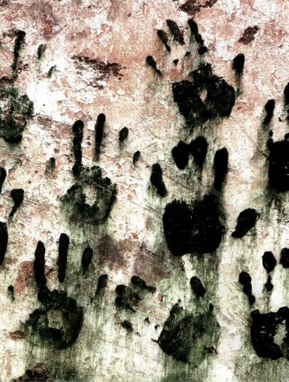
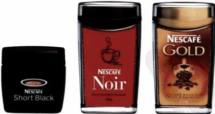
Study cues
- Choose a symbol (a star, a circle, a tick) and write two completely different possible meanings. Where does the meaning come from?
- Is your assignment evolution or revolution this time? List two things that stay unchanged.
品牌 100
Scope. This is a catalogue of about a hundred brand identities, many of them in food, fashion and events. At the front are five very short judgement questions; the rest is work. Use it to practise asking questions, not as a substitute for a strategy book.
Main ideas
- The five questions are: does the concept have social meaning, does it express real values, does it satisfy aesthetically, can it be used across different channels, and does it suit the future?
- The preface sees sustainability as a long-term, cross-cultural process, not a kind of form. At the time, very few corporate identities truly achieved it.
- The contents page is a long list of finished projects, from ice cream, chocolate and tea rooms to marathons and children's clothing. Each entry is short.
- The pages on wine ask that the origin of each bottle still be readable, while the design elements stay consistent across the range.
- Many pages have only the designer's credit. The credit is the usable information on such a page.
Methods
- Score a case against the five questions. If the answer to any of them is "cannot tell", write "cannot tell".
- Write down the industry first (food, clothing, sport), then judge the graphics.
- Collect only a structure you can carry over, for example "every item in the range still has its own name".
- Mark unreadable pages as illustrations from the book.
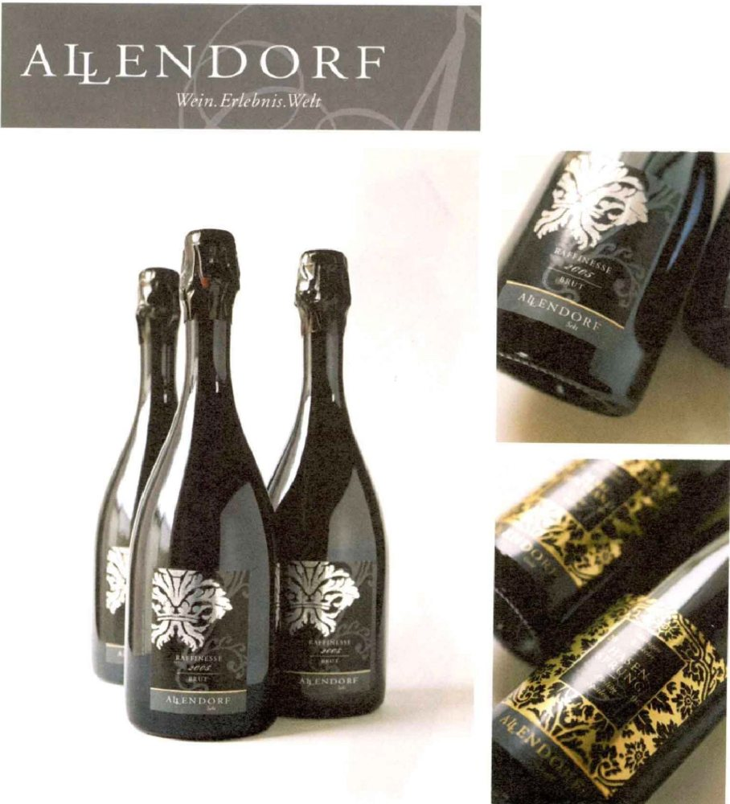
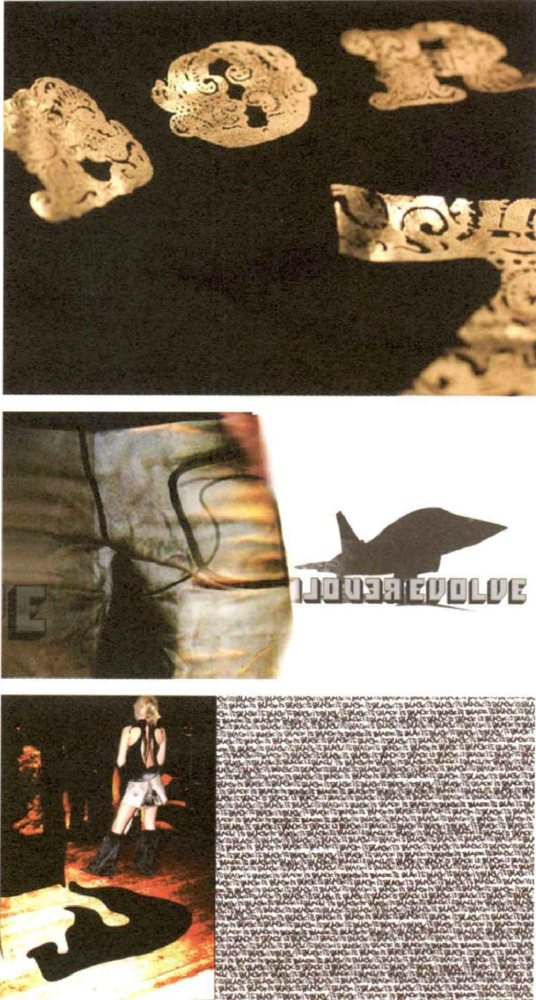
Study cues
- Assess one of your own proposals with the five questions. Which one scores lowest?
- How can three packages in one range look like a family and still be clearly three different things? Write two approaches.
一個 Logo 的誕生
Scope. This is a process book on "how a logo is born". The first half covers the brief, research, ideas, design, presentation and integration; the second half turns to the formal trends of its time. It is a how-to guide plus commentary on work. It is not the book of twenty-five rules, nor a critique of branding.
Main ideas
- A logo is defined as a conceptual symbol for communication, not just a picture. Its function is described as the part that does not change.
- The process headings are the method: design brief, market research, graphic ideas, design, presentation to the client, integration.
- One trend is the slash: it can mean "or", the "and" between two initials, or a fraction. The book sees the slash as a sign that joins or splits concepts.
- A second trend is the formula: break the finished product back into its ingredients (for example, a biscuit broken into grains, chocolate and marshmallow) and let people put the result together in their heads.
- A third trend is the unfixed logo: typeface, colour and form can change to suit different places and age groups. Even when it changes, there must still be a core that people recognise.
Methods
- First write two sentences under each of the six process headings, then read the trends chapter. If you do it the other way round, only style will be left.
- If you use a slash or a formula, state what it means in this logo. You cannot use it just because it has been common lately.
- For an unfixed logo, write one extra line: what is not allowed to change.
- If a case page only shows materials and craft (the cut of a black diamond, bronze foil), record the materials and craft. Do not fill in a client story.
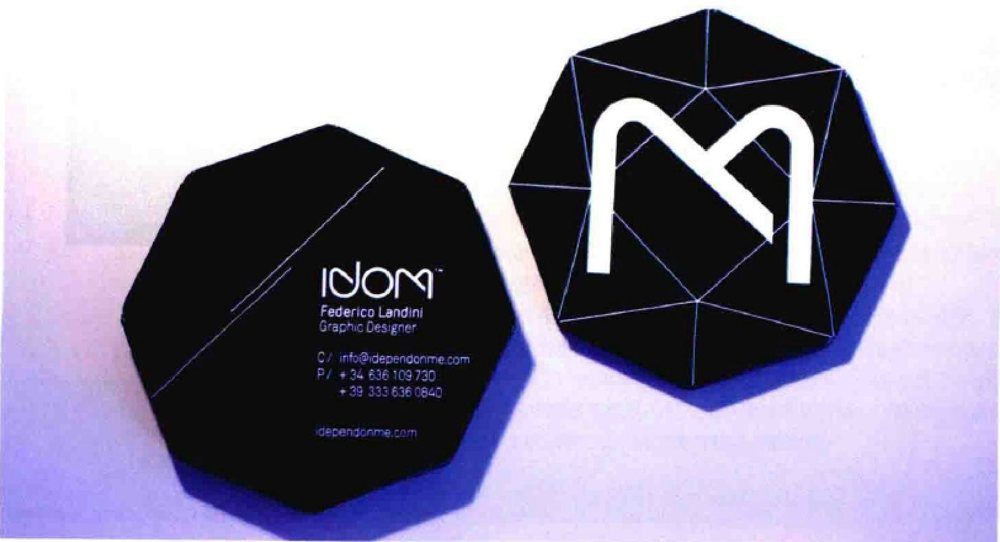
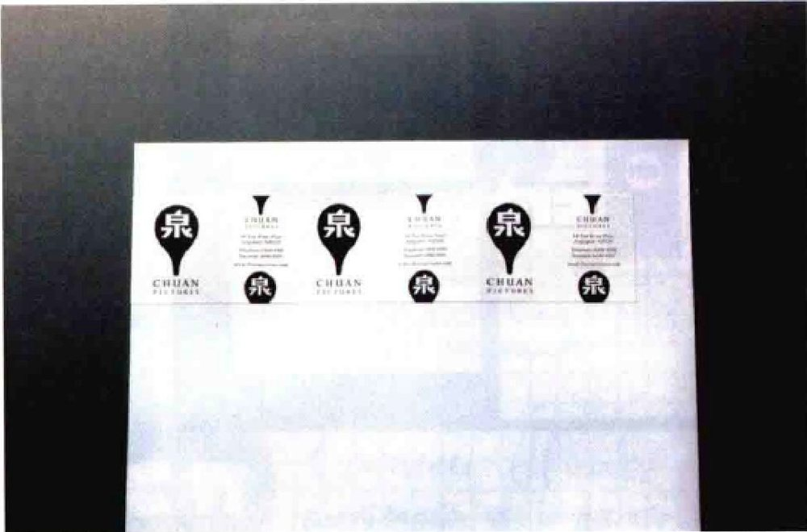
Study cues
- For the slash, the formula and the unfixed logo, say in one sentence each what thinking it does for the viewer.
- If your logo were to be "unfixed", write down two things that can change and one that must never change.
視覺美食：最佳餐飲品牌設計
Scope. This is a catalogue of food and drink brands, grouped into restaurants, light meals, bakeries and desserts. Each entry shows one venue's identity, menu and interior atmosphere. It is not a general logo handbook; when you borrow from it, look at the food and the location together.
Main ideas
- The graphics follow the venue. The Local Mbassy in Sydney uses specialty coffee to pay tribute to local culture of the 1920s; the beams, light bulbs, concrete and large portraits are all one idea.
- The season can decide the colours. BA 53's menu changes with the Nordic seasons, and the colour scheme is based on this, while also feeling fresh and traditional and reflecting the chef's innovation.
- Clérigos has a menu ranging from tapas and Portuguese food to sushi. The design puts traditional tiles alongside modern textures, the menu includes proverbs and jokes, and it was finally made into newspapers, flyers and placemats.
- Because Set Cafè uses local produce, its lettering was carved into potato stamps. The logo is a plate-like geometric shape with a monogram inside.
- These decisions do not necessarily hold outside the restaurant. The catalogue shows a whole dining experience, not a logo that can be stuck onto any industry.
Methods
- For each case, record: the location, what is special about the menu, and which local clue the graphics repeat.
- Check whether the logo, menu and interior are saying the same thing. Looking at the logo alone can mislead you.
- If the colours come from the season or the ingredients, say so in your notes, so you do not mistake them for an arbitrary trendy colour.
- When you move a food and drink approach to another industry, first write down a new "ingredient" or "place"; otherwise you are just changing the skin.
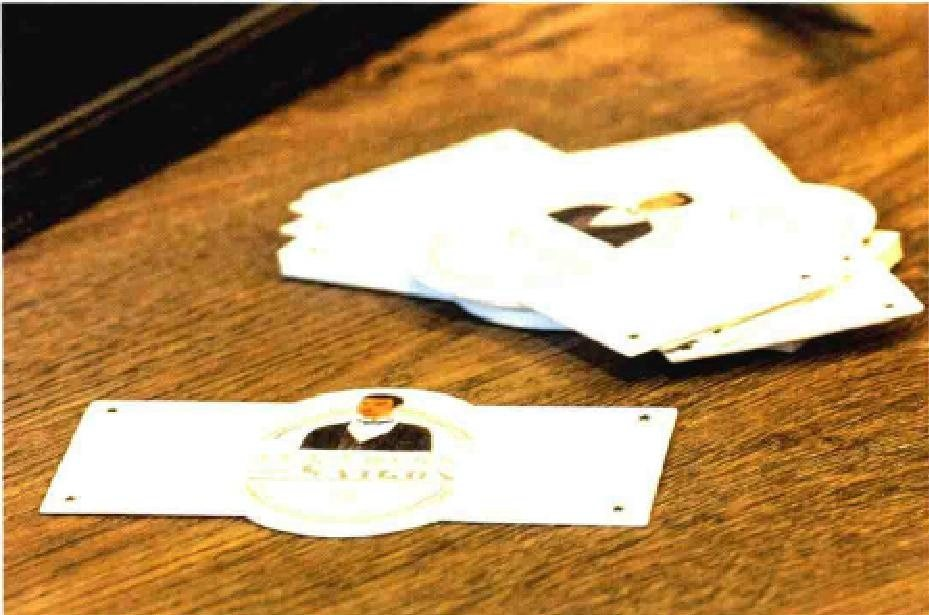
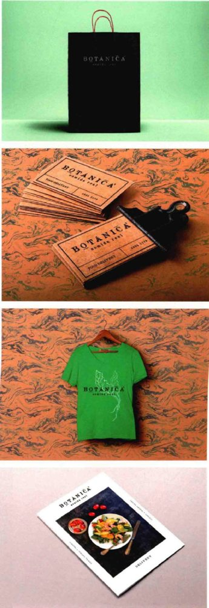
Study cues
- For a campus snack shop, write three visual clues that could only come from this shop (ingredients, location or way of eating).
- If the logo, menu and interior each say something different, which would you fix first? Why?
溝通時尚品牌
Scope. This is a catalogue of fashion brand communication. Seasonal collections allow bigger risks than ordinary graphic design, because the aim is often excitement and imagination, not just selling the product. Do not treat its seasonal images as lasting rules for logos.
Main ideas
- Fashion communicates excitement. The audience expects to be surprised, to dream, and to feel aesthetic pleasure.
- Seasonal collections have a short life, so they can try ideas that would be considered too risky in other fields. Look at the lasting identity and this season's experiments separately.
- The work is often made by fashion, photography, styling, make-up and space together. The graphics are not finished on their own.
- The contents include names such as Nike, Stefanel, Issey Miyake, Fila and Lacoste publications. They are communication cases, not logo tutorials to redraw.
- A sub-brand must be cut off from its parent brand. VIOLET, shown in the image, was required not to be seen as an extension of EXTRA.su.
Methods
- First write the one point of excitement this season should make people feel, then write what the product is.
- If there is a sub-brand, run a test: cover the name, and see whether it would be mistaken for the parent brand. If they should be separate, it must not be.
- Put "images that live for one season" and "the logo that must still be there next season" in two separate folders.
- Record the photographer and stylist from the credit line too, because the images are not made by the logo alone.
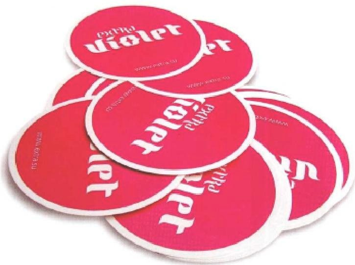
Study cues
- Choose a fashion brand and write separately: which part belongs to this season, and which part should still be there in five years.
- If you were making a diffusion line, write two rules to stop it being seen as a copy of the main line.
100 個經典 Logo
Original title: Logo Life: Life Histories of 100 Famous Logos
Scope. This is a historical catalogue of a hundred famous logos, one name per entry, focusing on how the logos changed. It is history reading, not a set of design steps. Do not use it to "redo" these companies' logos.
Main ideas
- Each entry usually has the founding background and earlier and later versions of the logo. What you read for is the reason for the changes, not whether the final form looks good.
- 3M's early logos were not consistent; only later did they settle into a wordmark. Gerald Stahl's square design leaned industrial. In 1978 Siegel & Gale set the 3 and M together in Helvetica and recommended red. At the time the company was also shifting from abrasives to consumer goods.
- 7-Eleven grew out of an ice shop. The 1946 name referred to opening from 7 a.m. to 11 p.m. The logo went from ELEVEN running diagonally across it to the 1969 two-colour 7 with a box, with the last letter of ELEVEN changed to lower case.
- Redesigns are often about staying consistent at a distance and on different materials, not about chasing a new style.
- The contents list is long, from airlines and cars to credit cards and charities. Do not fill in stories from memory for entries you have not read.
Methods
- Pick one entry and make a timeline: what changed, what stayed, and what business the company was in at the time.
- Put the early, more illustrative version next to the later lettering version, and write down the information lost and the adaptability gained.
- Use only the years and designers stated in that entry.
- If your assignment is influenced by a classic logo, write down the differences. You cannot hand in a near copy.
Study cues
- Using either the 3M or the 7-Eleven entry, write down what problem each of two redesigns solved.
- Once a logo becomes "more consistent", what might it lose? Explain with an example of your own.
品牌設計之美：冷色調的色彩詮釋
Scope. This is a textbook on cool colours. It first explains how colour is described, then what colour does in brand communication, and then has chapters on purple, green and so on, each with cases. It has more concepts than a pure colour catalogue, but it is still not a handbook on logo structure.
Main ideas
- The book starts from Newton's spectrum and the colour wheel, then moves to the Munsell system: value, hue and chroma are three different things. Only after that does it move on to digital colour.
- Brand colour is given three jobs: attracting attention, holding attention, and communicating and helping memory.
- Colour in design is separated from colour in painting. Painting can use many colours and many gradations for the sake of texture; design usually reduces the number of colours and gradations for the sake of the whole.
- Cool colours have their own emotional categories, and only then come the cases (for example Bistro Vida and Jennie Smith's photography brand).
- Some case pages have only the project name and the design firm left. You can record the name, but do not invent the story.
Methods
- When choosing a colour, write down its hue, value and chroma. Just saying "a bit bluer" does not count.
- Note whether this colour is there to attract, to hold, or to help memory. Do not answer "yes" to all three.
- Put one principle and one case on each page of notes. If the case has nothing to do with the principle, do not force a link.
- Mark advertisement pages with damaged text as illustrations from the book.
Study cues
- Describe the cool colour in your assignment by its hue, value and chroma.
- Is this colour mainly there to attract, to hold, or to help memory? If you want all three, which would you sacrifice?
Logo：29 個經典的前世今生
Original title: TM: The Untold Stories Behind 29 Classic Logos
Scope. These are historical case studies of twenty-nine logos, with the designer and year for each chapter. It is for close reading, not a sea of catalogue images, and not a book on drawing from scratch. As you read, follow one decision.
Main ideas
- The contents page is the book's method: one logo, one person or studio, one year. Examples include British Rail (1964), CBS (1951), Canadian National Railways (1960) and Coca-Cola (1886).
- Some chapters are the life story of a public symbol. In the book, the Campaign for Nuclear Disarmament symbol is linked to the 1958 march; I Love New York, the London Underground and the Munich 1972 Olympics each have a chapter.
- The designers are clearly named: Deutsche Bank is Anton Stankowski, ERCO is Otl Aicher, the London Underground lettering is Edward Johnston, Penguin is Edward Young, and I Love New York is Milton Glaser.
- The English National Opera chapter covers 1991 to 1995, with art direction and design by different people. An identity is often a print system over a period of time, not a logo drawn in a day.
- Record later public uses (marches, copies, tributes) separately from the original design decisions.
Methods
- For each chapter, record only four boxes: name, designer, year, and the one problem it had to solve.
- Split "the decisions at the time of design" and "how people used it later" into two paragraphs.
- Choose two chapters from the same era and compare the constraints they share (printing, viewing from a distance, national institutions).
- These logos are not a source library for your assignment. If you analyse them, analyse the decisions; do not redraw them and hand that in.
Study cues
- Choose two logos from the book and write down the designer and year of each. If you are not sure, write "not read in the book" rather than guessing.
- Once a public symbol has been used in marches, is it still just "the work of a certain designer"? Write three sentences about the anti-nuclear symbol.
Logo 百年
Scope. This is another scan of A Century of Logos. It is still a catalogue of style cases, not a new book. What is readable in this copy is the preface on how totems became national emblems, and the debate between ornament and modernism. For case details, use the pages of the earlier copy, and do not mix the page numbers of the two scans.
Main ideas
- The preface describes the prehistory of logos as: worship of the forces of nature, totems, then national emblems and family marks. This is cultural context, not drawing steps.
- The defence of ornament is very concrete: minimal logos have started to look alike. The text names similar-looking pairs such as Columbia Sportswear and Sun, or MINI and Bentley.
- Ornament is said to carry a little more vision and history. Stella Artois, whose logo has barely changed for a very long time, is used to show that complex linework can also last.
- Young companies are also allowed complex logos, because complexity can carry more information and does not belong only to old brands.
- The modernism chapter offers the opposite tools: remove empty artistic tendencies and combine elements according to function. The two chapters form a debate.
Methods
- Write down the claim of the ornament essay in two sentences, then the modernism chapter's rebuttal in two sentences.
- For the "minimal logos that look alike" mentioned in the text, say in one sentence each where the resemblance lies.
- When judging a logo, ask separately: does it look like other minimal logos? Does its ornament carry history?
- The page numbers of this scan apply only to this scan. For cases such as BAR SAGRADO, go by the pages of the other copy.
Study cues
- When minimal logos start to look alike, what way out does the book suggest? Which sentence do you agree with?
- For the same logo, write one revision note from the point of view of "ornament" and one from "function". Can both be true at once?
品牌至上：LOGO 設計法則與案例應用解析
Scope. This is a practical book from the front line of logo work. It moves from definitions, types of combination and six qualities to marketing and the author's own projects. It is closer to daily studio life than a historical catalogue, and sticks closer to the logo as an object than a strategy handbook.
Main ideas
- Combinations are divided into several types: symbol plus lettering, symbol only, lettering only, and graphic and type fused together. Choosing one is the first design decision.
- A good logo has six qualities. The book links distinctiveness with memorability: only a distinctive logo sparks curiosity, and only then is it remembered.
- Logo and brand should be discussed separately, and so should type design and logo design. Good lettering does not mean the logo is finished.
- The trend of logos becoming simpler gets its own "why?". Simplicity is a trend, not the answer for every client.
- Recognition has an order. In one housing case in the book, a background pattern resembling a lingzhi mushroom adds recognisability and a sense of "home", while the seal beside it also brings in the group's corporate logo. This is application, not decoration stuck on.
Methods
- Declare the combination type first, then draw. If you change type halfway, write a new sentence of reasoning.
- Score yourself on "distinctive" and "memorable". If the score is low, do not discuss style first.
- Keep one failure on record: when client and designer do not share values, the project stalls. The preface treats this as normal.
- When you hand in, explain the order of recognition: what the viewer sees first, and what next.
Study cues
- Which of the four combination types does your logo belong to? If you changed it to "lettering only", what would you lose?
- Write down the order in which viewers see it: the first glance, the second glance, and the words they read last.
品牌識別法則：100 條原理
Original title: Brand Identity Essentials: 100 Principles for Designing Logos and Building Brands
Scope. This is a book of identity principles, about a hundred of them, from pictorial marks, visual style and colour to whether personality and behaviour are consistent. It is not a catalogue arranged by industry. There are many images, but each one illustrates a principle.
Main ideas
- A trademark is a picture, applications turn it into a project, and what people feel is the brand. Studying only the logo is like going to France without seeing Paris.
- A pictorial mark can be a shortcut: a toothbrush tells people this is a dentist, not a shoemaker. It can also be a metaphor: the book uses the ship of Mayflower, the moving company, as an example. The ship relates to moving and migration, but it is not a drawing of a lorry.
- Apple does not sell apples. The book uses it to show that a pictorial form can leave room for interpretation, and mentions that the 1976 logo of Newton under the apple tree was later replaced.
- Visual style (photography, graphics) makes up the identity just as much as the logo does. Printing the logo on a cap does not give you a style.
- The colour section calls "orange is the fast-food colour" and "blue makes people calm" urban legends, to be tested rather than memorised. Stock photos are also criticised for being unable to build a distinctive tone.
Methods
- State clearly whether your logo is a shortcut or a metaphor. Either way, you should be able to explain it in one sentence.
- Specify a photographic or graphic style for the project; do not hand in only the symbol.
- Each time you use a piece of colour folklore, find a counter-example. Only if you cannot find one, decide to follow it.
- The hundred principles are a checklist, not a hundred styles. Use only three at a time to review your own assignment.
Study cues
- Draw a "shortcut" logo and a "metaphor" logo, both for the same bicycle shop. What kind of thinking does each one save the viewer?
- Choose a colour rule you believe in, then find a brand that breaks it but still works.
NO LOGO：顛覆品牌全球統治
Original title: No Logo: Taking Aim at the Brand Bullies
Author: Naomi Klein
Scope. This is a critique of brand expansion, not an identity handbook, and certainly not a logo catalogue. The titles of its four parts already state its position: No Space, No Choice, No Jobs, No Logo. Design students can use it to question what a beautiful identity might be hiding.
Main ideas
- Brands have moved from product marks to the centre of culture: cityscapes, media, music and sport are all taken over by brands. The Nike chapter treats sports stars, rivals and the brand itself as symbols that can be sold.
- Production is described as the other side: factories moving abroad, export processing zones, driving down wages, temporary workers. The book compares numbers of temporary workers in the United States to show how work has become insecure.
- "Cool" needs a constant search for the next culture that has not yet been commercialised, and once it is found, it is turned into marketing.
- Ways of refusing include altering adverts, reclaiming the streets, and campaigns against specific brands. A banner says protest should cross borders just as capital does.
- The book ends by setting consumerism against citizenship. If designers only learn how to make logos cuter, they have missed the book's question.
Methods
- After reading a strategy book, use this one to add a question: who makes it, where, and under what conditions?
- Put a brand's advertising story next to the labour story in the book. If the two columns do not match, do not hand in only a visual proposal.
- Record the ways logos appear in public space: schools, streets, events.
- Do not turn the critique into an "anti-brand" visual style and hand that in as your assignment.
Study cues
- Choose a brand you like and write separately: the story it tells customers, and the production story you do not yet know. If the second column is empty, you cannot judge yet.
- When a logo appears on campus or in the street, whose space is it taking up? Write down an example you have seen.
脫穎而出的品牌致勝秘密
Original title: Designing Brand Identity: An Essential Guide for the Whole Branding Team
Author: Alina Wheeler
Scope. This is another Chinese edition of Designing Brand Identity, using a different set of translated terms (brand identity, branding, touchpoints). Its content is the same kind of handbook as the earlier "Brand: Innovation and Design" edition: definitions first, then when to do it, then phases and cases. Do not treat it as a third method.
Main ideas
- Brand identity is described as something you can touch, hear and watch move. It helps people recognise the brand and amplifies its difference.
- Branding is a discipline for building awareness and loyalty, and it needs continued commitment from senior management. Types include co-branding, digital, personal, cause and nation branding.
- "When to do it" is written in clients' own words: a new company needs business cards and a website; the product is great but feels dated; eighty departments have inconsistent names; the name has a negative meaning in a new market; the company does not look like one company when facing customers.
- An abstract mark need not be tied to a particular object first. The Dosirak logo is described as able to turn into patterns on everyday objects, so it is easy to apply in different settings.
- Identity on vehicles should stay simple. Airships and hot-air balloons are treated as flying identities; too many slogans and phone numbers make a vehicle livery fail.
Methods
- First point out which problem on the "when to do it" list you have, then choose your tools.
- Compare the phase names with the other Chinese edition: designing identity, creating touchpoints, managing assets. The names differ, but the order is the same.
- Give an abstract mark an application test: can it become a pattern without losing its identity?
- For vehicles, signs and uniforms, keep one draft each with "only the logo and one piece of information".
Study cues
- From the "when to do it" list, choose the line that sounds most like your client, and write down the first touchpoint you should change.
- This book and "Brand: Innovation and Design" use different phase names. List two pieces of evidence that would lead you to treat them as the same process.
精簡：無印良品與品牌理念打造
Scope. This is a strategy book about brand philosophy, with Muji as the running example. It teaches how to condense intentions into one sentence that can guide action. It is not about how to draw the Muji logo, nor a catalogue of shops.
Main ideas
- A philosophy is defined as a principle that sums up intentions. Its role is to gather strength, decide the state of things, guide action and make the most of value.
- A philosophy has a shelf life, and its effect depends on whether anyone actually uses it to make decisions. If it is written on the wall but changes no behaviour, it does not count.
- Muji is used to show that a philosophy can fit into very few words. The book's path is to take stock of assets and customers first, then write the philosophy.
- A short sentence can change an industry. The book uses "1,000 songs in your pocket" to show how one sentence can change both how something is used and how an industry is structured.
- Some philosophies are high-risk. The book uses "a car with zero fatalities" as an example: it dictates what the company can and cannot do, so it is not slogan decoration.
Methods
- Write the philosophy as a sentence you can say in under a minute. If it runs over, you are still using adjectives; it is not yet a philosophy.
- Take stock of existing assets and customers first, then imagine the personality. If you reverse the order, the philosophy will be empty.
- Write down one thing this philosophy forbids. A list of what is forbidden tests it better than a vision poster.
- When you practise with Muji, analyse "still recognisable without stressing the logo"; do not redraw its labels.
Study cues
- Write one sentence that you think is Muji's philosophy, then one thing it would therefore never do.
- Condense the philosophy of your assignment into ten words or fewer. If you cannot, which adjective is holding you back?
電商品牌形象設計
Scope. This is a handbook on brand touchpoints for e-commerce websites, organised by page component: header, home page, category pages, product pages. It is not about drawing logos, nor a book on brand philosophy. Here, the brand means that users can find things, complete a purchase, and still recognise who this is.
Main ideas
- The header is broken down into the logo, customer service, search, account, shopping cart, navigation, and the company information and support in the footer. These positions are identity, not just function.
- The home page needs a hero image, text, a call to action and featured products. Sub-category pages rely on filtering, sorting and the product grid.
- The product page is one step away from purchase. The name must be complete, the images must show angles and details, and prices and options should include only what is needed to complete the purchase.
- The book mentions F-pattern reading. Share buttons should not upstage the buy button. Breadcrumb navigation tells people which level of the site they are on and lets them go back.
- Tile-style entry points are said to suit tapping on mobile devices. If the brand identity cannot be tapped on a small screen, it is not finished.
Methods
- First mark the five header tasks on a sketch, then decide where the logo goes and how big it is.
- Make a list of questions for the product page: size, colour, shipping, returns. Do not hide unanswered ones deep in the site.
- Look at the buy button and the share button together, and confirm which one stands out more.
- Look again on a narrow screen: are the tap targets big enough, and are the filters still there?
Study cues
- Draw a shop header and mark the logo, search, account and shopping cart. If you removed one of them, which would make the purchase fail first?
- On a product page, when the share button and the buy button compete, how would you rearrange them?
品牌標誌：頂級設計 150 例
Original title: Creative Solutions: Logos: Making a Strong Mark: 150 Strategies for Logos That Last
Scope. This is another scan of Brand Logos: 150 Top Designs. It is still a catalogue of cases told as challenge, process and result, and it opens with the same 6Ps. Use this copy to read the transport and coffee cases near the back; for the jazz league and Zephyr stories, go by the pages of the other copy, so you do not end up with two sets of page numbers.
Main ideas
- The method is the same as in the other copy: look at the market first, then make a strong logo within the constraints. The styles can be very different.
- The logo for Air France's cabin service has a clear constraint: it must not overpower or clash with the company's own trademark, while showing young, fashion-conscious passengers the luxury and comfort of flying.
- This shows that a sub-identity and the parent trademark are two layers. The logo for a service should be recognisable, but it must not become a second company logo.
- The Bene coffee house uses colour saturation and hand-drawn letters to convey the richness of a cappuccino. The book says the designer was refining an existing model, not inventing a coffee symbol from scratch.
- The same entry also mentions a hotel restaurant's trademark based on the materials of its interior. The materials in a place can become the basis for a logo.
Methods
- If the logo is for a service sub-brand, first mark out the parent trademark's no-go zone: no recolouring, no distortion, no being overpowered by the new logo.
- Use this copy to practise how to write up the "result": which kind of passenger, which kind of tableware, which viewing distance it appears at.
- Give hand-drawn lettering a separate reduction test. If the richness turns muddy at small sizes, it has failed.
- Do not treat p.179 of this copy and the page numbers of the other copy as the same page.
Study cues
- When the parent brand already has a logo, what two things must the logo for a sub-service not do? Answer using the Air France entry.
- What problems will a hand-drawn logo meet at business-card size and at cup-sleeve size?
設計品牌
Author: Susumu Harada
Scope. This is another scan of 《設計品牌》, the same book as the earlier "Design Branding (Susumu Harada)". The readable pages in this copy focus on the definition of a brand and on charts for researching "how others see us". For the contents of the process, use the earlier copy, and do not mix the page numbers.
Main ideas
- Branding is described as turning a company into information. When things are not transparent, people use a company's image as a clue for judgement, so a company must be able to express itself.
- The author writes about practice from experience of branding more than 350 companies, for both business leaders and designers. Logic and feeling have to work together.
- A complete identity keeps a company looking consistent through change and crisis. Technology can change, but the consistency of its actions must not break.
- A brand company is not a company without flaws. A chart in the book says: a company that can combine its existing positive resources and dares to express them is a brand company.
- You must know how others perceive you. A self-description that only satisfies people inside will drift away from the outside impression.
Methods
- Do a visual audit: lay out all the communication materials the company is putting out, and see how information flows and whether decisions are visible.
- Make a table of positive resources. List only the items you can show evidence for now.
- Use interviews or existing materials to write down "how others perceive us", and compare it with the internal story.
- Use the charts in this copy together with the step diagrams in the earlier copy, but when quoting, say which scan the page number comes from.
Study cues
- List three positive resources of an organisation, and one resource you suspect outsiders know nothing about.
- When "the internal story" and "how others perceive us" do not match, should the logo change first, or the story? Write down your judgement.
世界標誌大典 1
Scope. This is the first volume of a multi-volume logo encyclopedia. The preface is a complete set of logo principles; the main body is a logo dictionary arranged by image. The principles can be used as a checklist. Many of the dictionary pages in this scan are unreadable, so those pages can only be treated as images, not as history.
Main ideas
- The preface lists seven qualities: function, identification, prominence, versatility, artistry, accuracy and durability. Artistry does not cancel out function and accuracy.
- Four kinds of beauty: symbolic beauty, characteristic beauty, concise beauty and pure beauty. Conciseness is not careless simplicity; purity means removing any shape, word or colour that is not needed.
- Approaches to the idea are divided into representation (drawing the typical object of the industry directly), symbolism (using conventional associations), allegory (suggestion), analogy (comparing with a similar object) and visual sensation (relying on the force of the form itself, not its meaning).
- Expression is further divided into figurative, suggestive and abstract. Suggestive means borrowing the idea of an object and then writing it out in an abstract form.
- The main body is an encyclopedia, not a set of case stories. Do not guess which company an unreadable page shows.
Methods
- Score your own logo against the seven qualities, and fix the lowest one first.
- Choose only one of the five approaches for a round of sketches. If you combine two, say so clearly.
- Cut once by the rule of pure beauty: if one dot, one line or one colour will do, do not add a second.
- If the text on a dictionary page is garbled, the caption stops at "Illustration from the book".
Study cues
- Write one logo direction each using representation, symbolism, allegory, analogy and visual sensation, for a "campus bookshop".
- Which element in your logo is not really needed? Once it is removed, which of the seven qualities will improve?
品牌設計法則（徐適）
Scope. This is a textbook on brand design. It runs from philosophy, logo principles, Chinese and Latin logotypes and colour all the way to research, positioning, presentation and touchpoints. It is both a how-to-draw book and a process book, not a catalogue.
Main ideas
- The book sees brand design as a very broad application of graphic design: advertising, e-commerce, space and print all work for the brand. Being good only at visuals does not mean you can build a brand.
- The logo principles include the isolation effect: making the part that should be seen stand out from its surroundings. The principles are for checking form, not for piling up effects.
- Logotypes are handled separately. Chinese characters have to become part of a graphic symbol; Latin lettering has to deal with optical illusions, negative space and letter-spacing. Serif and sans-serif are understood through their history before being used to make wordmarks.
- The colour chapter asks you to distinguish CMYK, RGB, HSB and Pantone, and gives associations and colour-scheme advice for common colours. Output quality is part of the brand.
- The process is: communication, research, strategic positioning, brand personality, mind maps and hand sketches, presentation, touchpoints, visual identity manual. Touchpoints include products, online products, advertising, spaces and offices.
Methods
- Follow the flow chart. Do not work backwards from a finished piece in the software and make up the research.
- Write the brand personality as a few adjectives, then draw a mind map, then start sketching.
- Check the letter-spacing and visual balance of the Chinese logotype and the Latin logotype separately.
- Put only these on the last page of the manual: clear space, minimum size, colour values, and one example of incorrect use.
Study cues
- Write four personality adjectives for your brand, and say which ones the logo already expresses and which it does not yet.
- Take the same Chinese name and make one draft with a serif feel and one with a sans-serif feel. Which draft runs into letter-spacing problems first?
日本彩色商標與企業識別 10
Scope. This is volume 10 of a catalogue of Japanese corporate identity, with one colour trademark and its applications per entry. Entries usually give the industry, designer, client and year. It is not a strategy essay, nor a set of drawing steps. Most of the Japanese text in this scan is damaged, so the images can only be looked at, not retold from their captions.
Main ideas
- The book's unit is "one identity": the logo plus how it looks on envelopes, signs or products. You are looking at the system, not an isolated logo.
- Judging from the fragments of the contents that can still be read, clients include hospitals, shinkin banks, universities, local governments, events and manufacturers, with years from around 1999 to 2003.
- Colour is the focus of the series. How the same form keeps its colour on different materials matters more than the logo's sketching process.
- It is one volume of a multi-volume encyclopedia. Do not expect this volume to cover the whole history of Japanese identity.
- When the text fails, the honest approach is to admit it is an illustration from the book, not to guess garbled text into a company history.
Methods
- Look at only two pages from one industry at a time, and compare whether the colour is classifying or decorating.
- Record only the fields you can read: industry, year, and whether it is applied to envelopes or products.
- Use it to train "how much of the logo is left on real objects", not "the legend of this logo".
- If you want to write about Japanese identity methods, turn to the strategy books; this one only provides visual evidence.
Study cues
- What are the minimum three fields you should record for a catalogue page? What kind of content does this scan not allow you to write?
- When the same logo is printed on an envelope and on a product, what different colour problems might it meet?
解構 Logo 設計：300 例國際 Logo 分析與解讀
Original title: Deconstructing Logo Design: 300+ International Logos Analyzed and Explained
Scope. This is analysis plus catalogue: the front covers the history of logos and the design process, and the back has about three hundred logos arranged by industry, with focus sections on technology and culture. It has one more layer of explanation than a pure catalogue, but its main body is still examples, not a process sheet for your own project.
Main ideas
- The readers of early logos were the people who carried and distributed goods, not shoppers in a supermarket. Marks were printed on crates and bottles so people knew who the goods belonged to.
- Only after colour lithography did logos speak directly to consumers in a stable way. AEG is described as extending one logo across all the company's activities, rather than using it as a single mark.
- Later styles followed technology and popular culture: illustrated trademarks, modernism, streamlining, and the 3D effects, gradients and highlights of software. The BMW logo is used to show that the outline can stay unchanged for a long time while the surface effects change many times.
- The process chapter covers philosophy, brand values, strategy, content, name, brief, development, presentation and application context. Convention and originality are discussed together.
- The page on the City of Melbourne logo shows dozens of variants, so that different groups can keep their own sub-logos within a unified system. The variants are a system, not a redraw every time.
Methods
- First place a logo in one period of history (made for distributors, illustrated, modernist, built up with effects), then discuss whether it looks good.
- Write down the values in the brief, and judge the form by those values, not by trends.
- If you make variants, first write the family rule: which part is always there.
- 3D effects and gradients need a reason. The history chapter says they were once fashionable, not that you must use them now.
Study cues
- Using the book's historical periods, give your logo a label, and write why it does not belong to another period.
- Make three variants for a city or a university department. Write down the rule that keeps them one family.
超越 LOGO 設計：國際頂級平面設計師的成功法則
Original title: Logo Design Love: A Guide to Creating Iconic Brand Identities
Author: David Airey
Scope. This is another scan of 《超越 LOGO 設計》, and the content is still that practical book: counting logos in the early morning, the twenty-five rules, and questions and answers on clients and copyright. This copy is full of "prepress design" watermarks, and the illustration pages are unreadable. For the rules and stories, go by the first scan; use this copy only to confirm it is the same book.
Main ideas
- It still starts from the overload of logos in everyday life, then discusses how emotional value affects choice.
- The readable items among the twenty-five include: ask questions first, understand printing costs, a logo does not need to show what the business does, not every logo needs a symbol, aim for one thing to be remembered, do not skip sketching, black and white, legibility, consistency, a one-colour version, multiple sizes, reversed out, and upside down.
- The questions and answers at the back deal with similar-looking logos, usage rights, portfolios, number of clients and copyright. These are practice issues, not graphic style.
- Watermarks and broken lines make many case pages impossible to retell. If you cannot retell it, do not write it up as a case.
- Compared with the first copy, this one does not give clearer FedEx or SwanSongs pages. Do not use damaged pages to create new brand stories.
Methods
- For practice, still use the four tests set out clearly in the first copy: black and white, reduction, reversed out, upside down.
- From this copy, take only the rules you can read word for word. Leave the numbers you cannot read blank.
- Mark watermarked pages as illustrations from the book.
- If sentences in the two scans conflict, go by the one with fewer broken words.
Study cues
- Of the twenty-five rules, which three are about testing and which three are about the client relationship? Just write the gist of each.
- When you come across a page that is almost all watermark, what should your notes keep, and what should they leave out?
超越 LOGO 設計：國際頂級平面設計師的成功法則
Original title: Logo Design Love: A Guide to Creating Iconic Brand Identities
Author: David Airey
Scope. This is a third scan of the same practical book. The chapters and the twenty-five rules are the same as in the first two, but the two images in this copy are readable and can add cases. There is no need to copy out the process and rules again; here, look at two named applications: a park, and why a law firm's old logo had to be replaced.
Main ideas
- The book's overall argument has not changed: there are too many logos, a story must come first, a logo is not a brand, and the process works both ways.
- Negative space and "what you take away matters just as much" are still demonstrated in the book. The Guild of Food Writers' pen nib and spoon already appear in the clearer scan.
- The Royal Parks logo was designed by Moon Brand, with a brief related to trees native to Britain. An identity should match what really exists in the place.
- The law firm Harned, Bachert & Denton did not want a louder symbol. It wanted people to see a unified team with professional ethics. The page shows the original logo for comparison.
- Both entries show that the client's sentence matters more than style. The parks are about trees; the law firm is about the team.
Methods
- Use this copy for presentation practice: first write the client's one-sentence request, then see whether the logo answers it.
- If the page shows an old logo, list the old problems in three lines. Do not just say the new one is more modern.
- For the list of rules, go by the contents of the first scan, so you do not mistake broken sentences in the watermarked scan for new rules.
- For named cases you can record the designer and year; do not fill in motives that are not written down.
Study cues
- Which sentence from the client is each logo answering, the Royal Parks one and the law firm's?
- If a design is only "more fashionable than the old one" and does not answer the client's sentence, which of the twenty-five rules will it break first?